<!doctype html>
<html lang="en">
<head>
  <meta charset="utf-8">
  <meta name="viewport" content="width=device-width, initial-scale=1">
  <title>arxiv digest — 2026-08-01</title>
  <style>
:root {
  --bg: #ffffff;
  --fg: #1f2328;
  --muted: #59636e;
  --border: #d0d7de;
  --card: #f6f8fa;
  --link: #0969da;
}
body {
  max-width: 980px;
  margin: 0 auto;
  padding: 2rem 1rem 5rem;
  font-family: -apple-system, BlinkMacSystemFont, "Segoe UI", Helvetica, Arial, sans-serif;
  line-height: 1.55;
  color: var(--fg);
  background: var(--bg);
}
a { color: var(--link); }
img { max-width: 100%; height: auto; }
pre, code { background: var(--card); border-radius: 6px; }
pre { padding: 1rem; overflow-x: auto; }
blockquote { border-left: 4px solid var(--border); padding-left: 1rem; color: var(--muted); }
details { margin: 0.6rem 0; }
summary { cursor: pointer; font-weight: 600; }
.paper-figures-scroll {
  display: flex;
  gap: 1rem;
  overflow-x: auto;
  overscroll-behavior-x: contain;
  padding: 0.75rem 0.25rem 1rem;
  margin: 1rem 0 1.25rem;
  border-top: 1px solid var(--border);
  border-bottom: 1px solid var(--border);
  scroll-snap-type: x proximity;
}
.paper-figure-card {
  flex: 0 0 min(260px, 72vw);
  scroll-snap-align: start;
  background: var(--card);
  border: 1px solid var(--border);
  border-radius: 12px;
  padding: 0.55rem;
}
.paper-figure-card img {
  display: block;
  width: 100%;
  max-height: 240px;
  object-fit: contain;
  background: white;
  border-radius: 8px;
}
.paper-figure-caption {
  display: block;
  margin-top: 0.5rem;
  color: var(--muted);
  font-size: 0.85rem;
}
.figure-strip-hint {
  color: var(--muted);
  font-size: 0.9rem;
  margin-bottom: -0.3rem;
}
</style>
  <!-- MathJax: renders $...$ inline math and $$...$$ display math, plus
       \(...\) and \[...\]. Loaded from the official CDN; works offline
       once cached. Configured to skip code/pre blocks so arxiv IDs that
       look like dollar amounts don't get mangled. -->
  <script>
    window.MathJax = {
      tex: {
        inlineMath: [['$', '$'], ['\\(', '\\)']],
        displayMath: [['$$', '$$'], ['\\[', '\\]']],
        processEscapes: true,
        processEnvironments: true
      },
      options: {
        skipHtmlTags: ['script', 'noscript', 'style', 'textarea', 'pre', 'code'],
        ignoreHtmlClass: 'tex2jax_ignore',
        processHtmlClass: 'tex2jax_process'
      }
    };
  </script>
  <script id="MathJax-script" async
    src="https://cdn.jsdelivr.net/npm/mathjax@3/es5/tex-chtml.js"></script>
</head>
<body>
<header style="background-color: #333; color: white; padding: 15px; margin-bottom: 20px;">
  <h1 style="margin: 0; font-size: 24px;">
    <a href="https://ochelpan.github.io/arXiv_clean/" style="color: white; text-decoration: none;">Main</a>
  </h1>
</header>

<h1>Daily arXiv Report</h1>

<hr>
<p>
<a href="index.html">← Index</a>
 · <a href="papers_01.html">← Previous</a> · <a href="papers_03.html">Next →</a>
</p>
<hr>

<h2>Papers 21–40</h2>
<p><a id="paper-2607.27847"></a></p>
<h3 id="even-harmonic-generation-through-nonequilibrium-steady-state-symmetry-breaking"><a href="http://arxiv.org/abs/2607.27847v1">Even-harmonic generation through nonequilibrium steady-state symmetry breaking</a></h3>
<p><strong>Authors:</strong> Milad Jangjan, Arman Kashef, Siamak Pooyan, Stefan Scheel, Dieter Bauer<br>
<strong>Type:</strong> theory · <strong>Category:</strong> other · <strong>PDF:</strong> <a href="https://arxiv.org/pdf/2607.27847v1">https://arxiv.org/pdf/2607.27847v1</a><br>
<strong>Analysis basis:</strong> full PDF text, analyzed in chunks
<strong>Topic relevance:</strong> 🔥 <code>non-equilibrium dynamics</code> <strong>4/5</strong> · <code>driven-dissipative phase transition</code> <strong>3/5</strong> · <code>methods for driven-dissipative</code> <strong>3/5</strong> · <code>non-equilibrium universality</code> <strong>2/5</strong> · <code>Frenkel-Kontorova</code> <strong>1/5</strong> · <code>Keldysh / 2PI / non-Gaussian methods</code> <strong>1/5</strong> · <code>analog quantum simulation</code> <strong>1/5</strong> · <code>correlated / nonlocal dissipation</code> <strong>1/5</strong></p>
<div class="figure-strip-hint">↔ Scroll figures horizontally</div>
<div class="paper-figures-scroll">
<figure class="paper-figure-card">
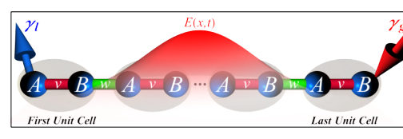
<figcaption class="paper-figure-caption"><b>Fig 1.</b> FIG. 1. A 1D SSH chain coupled to a source reservoir (gain rate γg) at the last site and a sink reservoir (loss rate γl) at the first site, driven by a spatiotemporal laser electric field E(x, t).</figcaption>
</figure>
<figure class="paper-figure-card">
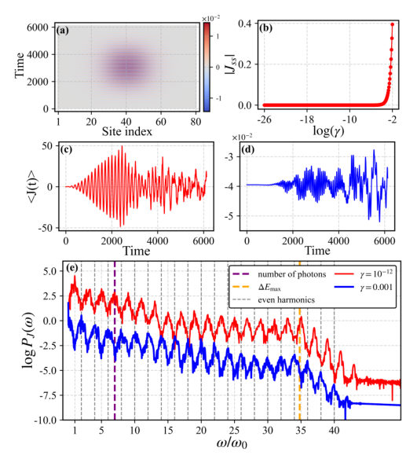
<figcaption class="paper-figure-caption"><b>Fig 2.</b> FIG. 2. (a) Applied electric field in time and space. (b) Steady-state current as a function of source and sink strength. Total current expectation values as a function of time for (c) γ = 10−12 and (d) γ = 0.001. (e) Corresponding HH spectra; calculations consider 7 photons in the spectral gap. Here, δ = 0.1, ω0 = ∆E/7, a0 = 0.5, and ncyc = 42, N = 40.</figcaption>
</figure>
<figure class="paper-figure-card">
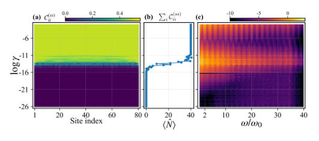
<figcaption class="paper-figure-caption"><b>Fig 3.</b> FIG. 3. (a) Particle number vs. site index and γ. (b) Total number of particles as a function of γ. (c) Contour plot of harmonic yields as a function of harmonic order and γ.</figcaption>
</figure>
<figure class="paper-figure-card">

<figcaption class="paper-figure-caption"><b>Fig 4.</b> Figure 2 shows the high-harmonic response of the current-carrying SSH chain. The driving frequency is chosen as ω0 = ∆E/7 = 0.043, and the peak electric- field amplitude is E0 = A0ω = 0.0172 with the number of cycles ncyc = 42. ∆E = 0.297 is the energy gap of the undriven SSH chain. In addition, the number of unit cells and the dimerization parameter are N = 40 and δ = 0.1, respectively. Finite-size scaling analysis confirms that the emergence of even harmonics in the HHG spec- trum is independent of system size in the large-N regime. Panel (a) shows the spatiotemporal profile of the applied laser field E(x, t). The field is localized around the center of the chain. Consequently, the laser...</figcaption>
</figure>
<figure class="paper-figure-card">
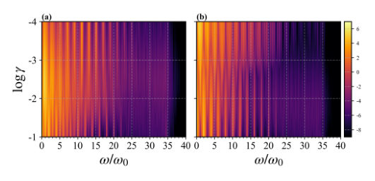
<figcaption class="paper-figure-caption"><b>Fig 5.</b> FIG. 4. Harmonic spectra as a function of log γ for (a) τ = 106</figcaption>
</figure>
</div>

<p><strong>Summary.</strong> The paper demonstrates that even harmonics can be generated in inversion-symmetric systems by driving them into a current-carrying, non-equilibrium steady state. This effect arises not from structural symmetry breaking but purely from the dissipative coupling to reservoirs. The intensity of these even harmonics is quantitatively linked to the magnitude of the DC charge transport current.</p>
<p><strong>Why it may be interesting.</strong> This work bridges nonlinear quantum optics (HHG) with non-equilibrium condensed matter physics (current transport in open chains), providing a novel spectroscopic probe for charge dynamics in centrosymmetric materials.</p>
<details>
<summary>Detailed structure</summary>
<p><strong>Main problem.</strong> The study investigates how even-harmonic generation (HHG) can occur in systems that possess inversion symmetry at the Hamiltonian level, but are driven into a non-equilibrium steady state by external currents.</p>
<p><strong>Main result.</strong> The emergence of even harmonics is shown to be directly controlled by the magnitude of the DC transport current, establishing a clear link between nonequilibrium charge transport and the breaking of HHG selection rules.</p>
<p><strong>Method.</strong> The analysis employs open quantum system theory using the Lindblad master equation formalism, solved via the single-particle correlation matrix approach for steady-state calculations.</p>
<p><strong>Model / system.</strong> The model is a one-dimensional Su-Schrieffer-Heeger (SSH) chain coupled to source and sink reservoirs, simulating boundary-driven current flow in an open quantum system.</p>
<p><strong>Key observables.</strong> High-harmonic generation (HHG) spectrum, steady-state transport current ($J_{dc}$), and the Uhlmann fidelity between time-dependent and steady states.</p>
<p><strong>Important parameters / regimes.</strong> The strength of the boundary coupling ($\gamma$), which dictates the non-equilibrium nature of the state.</p>
<p><strong>Assumptions / limitations.</strong> The analysis is restricted to pairing-free Gaussian states, allowing for the use of correlation matrices derived from the Lindblad master equation.</p>
<p><strong>Figures summary.</strong> Figures illustrate the 1D SSH chain setup with reservoirs and applied fields; they also show time evolution of current under different coupling strengths ($\gamma$) and the resulting HHG response spectrum.</p>
<p><strong>Paper structure.</strong> The paper first establishes the physical model (SSH chain in open system), derives the steady-state solution using correlation matrices, analyzes the symmetry breaking mechanism due to dissipation, and finally calculates the observable HHG spectrum linked to the DC current.</p>
</details>
<details>
<summary>Abstract</summary>
<p>High-harmonic generation (HHG) in inversion-symmetric systems is typically restricted to odd harmonics by symmetry. Here, we show that this selection rule can be broken without modifying the underlying Hamiltonian. We investigate a boundary-driven Su-Schrieffer-Heeger (SSH) chain coupled to source and sink reservoirs and demonstrate that dissipative dynamics generates a nonequilibrium steady state carrying a finite DC current. While the SSH Hamiltonian retains inversion symmetry, the current-carrying steady-state density matrix does not, leading to the emergence of even harmonics in the emitted spectrum. Using a correlation-matrix approach based on the Lindblad master equation, we obtain the steady state and calculate the resulting HHG response. We find that the intensity of the even harmonics is directly controlled by the transport current, establishing a link between nonequilibrium charge transport and HHG selection rules. Our results uncover a mechanism for even-harmonic generation that relies solely on nonequilibrium steady-state symmetry breaking and provide a route to probing transport currents through ultrafast nonlinear spectroscopy in centrosymmetric quantum systems.</p>
</details>
<p><sub><a href="#top">↑ back to top</a></sub></p>

<p><a id="paper-2607.27540"></a></p>
<h3 id="gaussian-non-relativistic-spontaneously-stochastic-hydrodynamics"><a href="http://arxiv.org/abs/2607.27540v1">Gaussian non relativistic spontaneously stochastic hydrodynamics</a></h3>
<p><strong>Authors:</strong> David Montenegro, Giorgio Torrieri<br>
<strong>Type:</strong> theory · <strong>Category:</strong> statistical mechanics · <strong>PDF:</strong> <a href="https://arxiv.org/pdf/2607.27540v1">https://arxiv.org/pdf/2607.27540v1</a><br>
<strong>Analysis basis:</strong> full PDF text, analyzed in chunks
<strong>Topic relevance:</strong> 🔥 <code>Keldysh / 2PI / non-Gaussian methods</code> <strong>4/5</strong> · <code>methods for driven-dissipative</code> <strong>3/5</strong> · <code>non-equilibrium dynamics</code> <strong>3/5</strong> · <code>correlated / nonlocal dissipation</code> <strong>2/5</strong> · <code>driven-dissipative phase transition</code> <strong>2/5</strong> · <code>analog quantum simulation</code> <strong>1/5</strong> · <code>non-equilibrium universality</code> <strong>1/5</strong></p>
<div class="figure-strip-hint">↔ Scroll figures horizontally</div>
<div class="paper-figures-scroll">
<figure class="paper-figure-card">
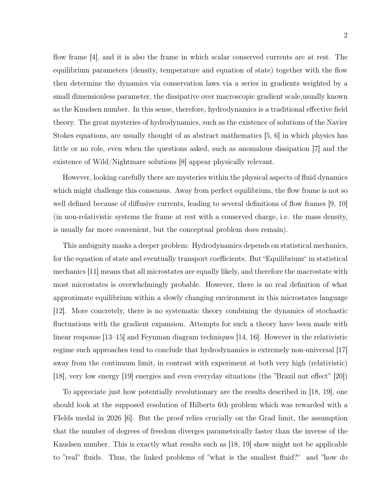
<figcaption class="paper-figure-caption"><b>Fig 1.</b> Low-resolution page preview, page 2</figcaption>
</figure>
<figure class="paper-figure-card">
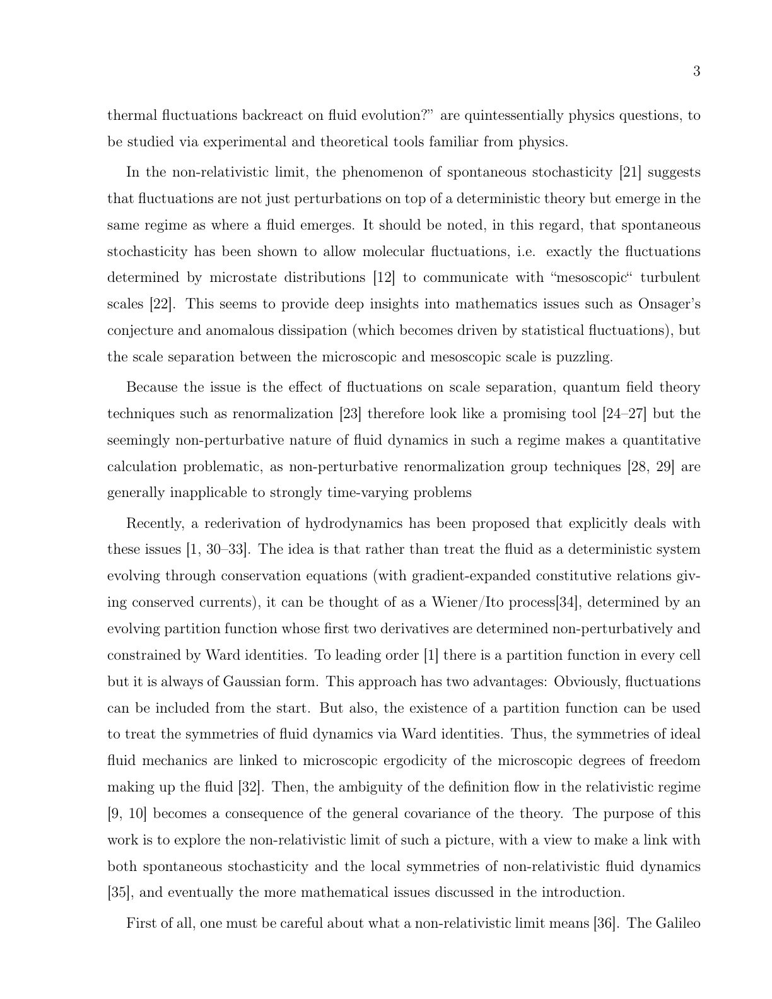
<figcaption class="paper-figure-caption"><b>Fig 2.</b> Low-resolution page preview, page 3</figcaption>
</figure>
<figure class="paper-figure-card">
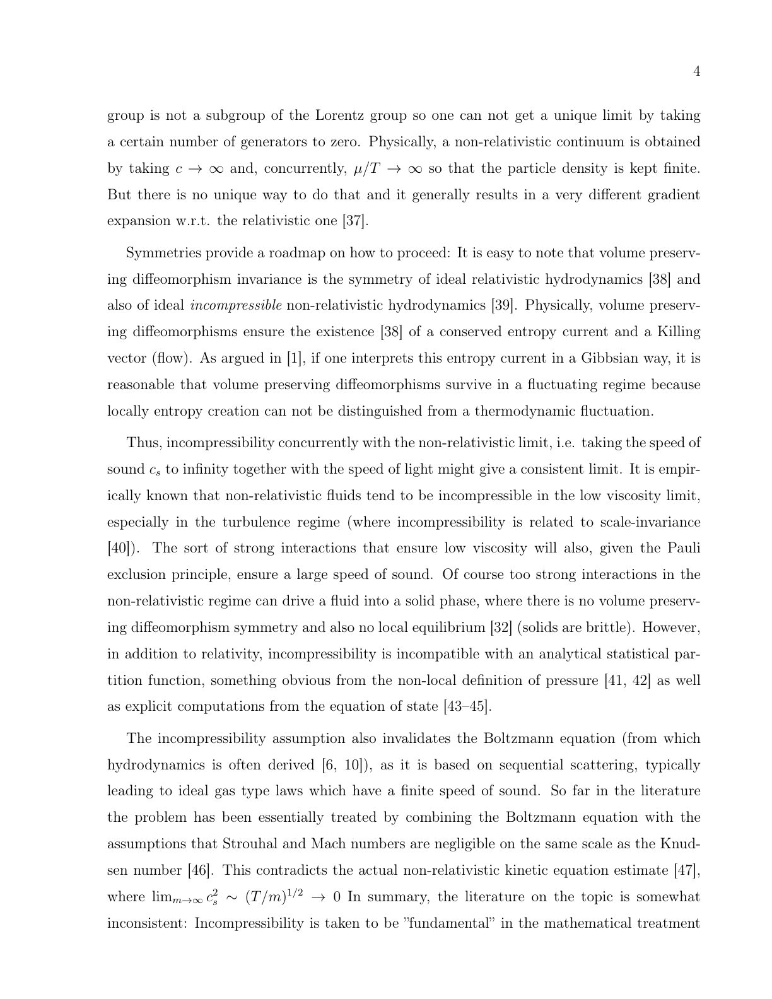
<figcaption class="paper-figure-caption"><b>Fig 3.</b> Low-resolution page preview, page 4</figcaption>
</figure>
<figure class="paper-figure-card">
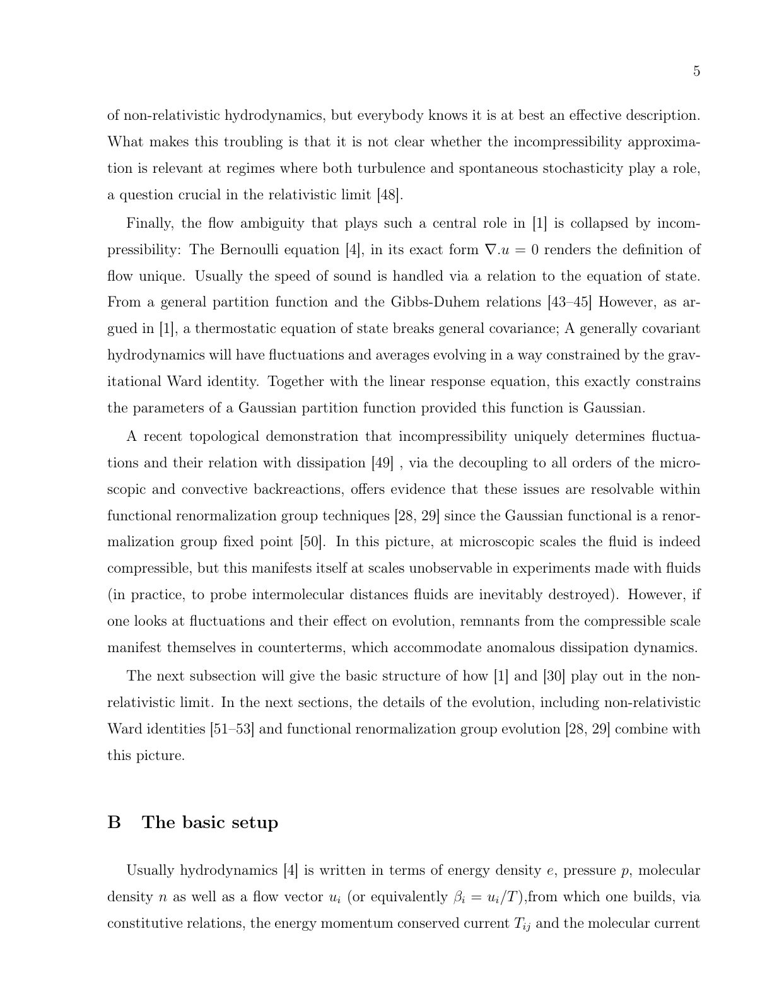
<figcaption class="paper-figure-caption"><b>Fig 4.</b> Low-resolution page preview, page 5</figcaption>
</figure>
<figure class="paper-figure-card">
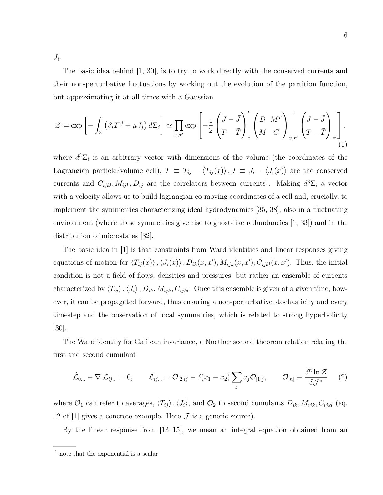
<figcaption class="paper-figure-caption"><b>Fig 5.</b> Low-resolution page preview, page 6</figcaption>
</figure>
</div>

<p><strong>Summary.</strong> This theoretical work develops a generalized hydrodynamic framework by applying functional renormalization group techniques. It tackles the complex transition between continuum hydrodynamics and microscopic statistical mechanics, showing how spontaneous stochasticity emerges naturally in this non-relativistic limit. The paper is significant for its rigorous mathematical treatment of scale dependence and symmetry breaking in fluid systems.</p>
<p><strong>Why it may be interesting.</strong> While focused on classical fluid dynamics, the use of advanced non-equilibrium statistical mechanics tools like FRG to handle crossovers and stochastic fluctuations is highly relevant for open quantum systems where dissipation and thermalization are key.</p>
<details>
<summary>Detailed structure</summary>
<p><strong>Main problem.</strong> The paper aims to understand the non-relativistic limit of Gaussian covariant hydrodynamics, specifically addressing the breakdown of the incompressibility assumption at microscopic scales.</p>
<p><strong>Main result.</strong> The resulting dynamics naturally incorporates spontaneous stochasticity as a macroscopic back reaction from statistical mechanics fluctuations, suggesting anomalous dissipation effects via RG counterterms.</p>
<p><strong>Method.</strong> The authors employ functional renormalization group (FRG) techniques to derive flow equations for effective actions, matching descriptions across different physical regimes (incompressible vs. compressible).</p>
<p><strong>Model / system.</strong> The study models fluid dynamics, treating the system's partition function as a Gaussian functional and analyzing conserved currents ($T_{ij}, J_i$) in both relativistic and non-relativistic limits.</p>
<p><strong>Key observables.</strong> Conserved currents ($\langle T_{ij} 
angle$, $\langle J_i 
angle$), correlators of these currents, and the scale-dependent effective action coefficients ($\Gamma_\kappa$).</p>
<p><strong>Important parameters / regimes.</strong> The Knudsen number (Kn) characterizes scale separation; key regimes include incompressible ($k \le k_0$) and compressible/relativistic ($|k| \ge k_0$) limits.</p>
<p><strong>Assumptions / limitations.</strong> The primary assumptions involve using a Gaussian ansatz for the partition function and treating hydrodynamics as an effective field theory based on gradient expansions, despite acknowledging limitations in this approach.</p>
<p><strong>Figures summary.</strong> Not specified (the notes detail mathematical equations and flow structures rather than describing figure content).</p>
<p><strong>Paper structure.</strong> The paper progresses by first establishing the framework using Ward identities and linear response theory for covariant hydrodynamics. It then develops the FRG flow equations, focusing on matching the effective action coefficients between the incompressible and compressible sectors at a crossover scale.</p>
</details>
<details>
<summary>Abstract</summary>
<p>We study the non-relativistic limit of Gaussian covariant hydrodynamics [1]. We argue that the condition of incompressibility provides additional symmetries matching relativistic hydrodynamics but incompressibility must break down at a <code>microscopic</code> scale. We then develop the renormalization group equations for average and fluctuations w.r.t. that scale, to understand its effect on flows at intermolecular distances where hydrodynamics gives way to statistical mechanics. The resulting dynamics naturally incorporates spontaneous stochasticity as a macroscopic back reaction of statistical mechanics fluctuations, as well as features reminiscent of anomalous dissipation and <code>wild solutions</code> as renormalization group counterterms. We frame these considerations into both a phenomenological discussion of the limits of applicability of fluid dynamics, and a discussion of where physics might shed some light on the mathematical issues associated with turbulence.</p>
</details>
<p><sub><a href="#top">↑ back to top</a></sub></p>

<p><a id="paper-2607.27394"></a></p>
<h3 id="universality-of-energy-space-entanglement-in-quantum-impurity-models"><a href="http://arxiv.org/abs/2607.27394v1">Universality of Energy-Space Entanglement in Quantum Impurity Models</a></h3>
<p><strong>Authors:</strong> Geng-Dong Zhou, Zhi-Da Song<br>
<strong>Type:</strong> theory · <strong>Category:</strong> strongly correlated electrons · <strong>PDF:</strong> <a href="https://arxiv.org/pdf/2607.27394v1">https://arxiv.org/pdf/2607.27394v1</a><br>
<strong>Analysis basis:</strong> full PDF text, analyzed in chunks
<strong>Topic relevance:</strong> 🔥 <code>Kondo &amp; dissipative impurity</code> <strong>4/5</strong> · 🔥 <code>entanglement &amp; information structure</code> <strong>4/5</strong> · <code>methods for driven-dissipative</code> <strong>3/5</strong> · <code>non-equilibrium universality</code> <strong>2/5</strong> · <code>correlated / nonlocal dissipation</code> <strong>1/5</strong> · <code>driven-dissipative phase transition</code> <strong>1/5</strong> · <code>non-equilibrium dynamics</code> <strong>1/5</strong></p>
<div class="figure-strip-hint">↔ Scroll figures horizontally</div>
<div class="paper-figures-scroll">
<figure class="paper-figure-card">
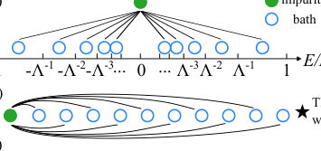
<figcaption class="paper-figure-caption"><b>Fig 1.</b> FIG. 1. (a) Impurity-bath coupling and logarithmic bath discretiza- tion. (b,c) The star and chain representation, respectively. We use the star representation in this work.</figcaption>
</figure>
<figure class="paper-figure-card">
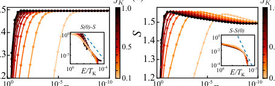
<figcaption class="paper-figure-caption"><b>Fig 2.</b> FIG. 2. (a) SΛ(E) for the Anderson model with U = 0, 0.5, . . . , 5 (bright to dark), ∆0 = 0.05, D = 1, and Λ = 2. Inset: the same data versus E/TK. (b) SΛ(E) for the Anderson and Kondo models at different Λ, with U = 0, ∆0 = 0.05, and JK = 0.5. (c,d) SΛ(E) for the fully screened and underscreened Kondo models with JK = 0.1, 0.2, . . . , 1.0 (bright to dark). Insets: |SΛ(0) −SΛ(E)| versus E/TK; the dashed blue lines indicate linear scaling with E. All DMRG calculations use maximum bond dimension χ = 1600.</figcaption>
</figure>
<figure class="paper-figure-card">
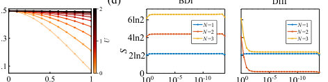
<figcaption class="paper-figure-caption"><b>Fig 3.</b> FIG. 3. (a) Comparison of SΛ(0) at different Λ for the Anderson impurity model, the Kondo model obtained from DMRG, and the exact value from directly diagonalizing the free-fermion Hamiltonian. The dashed lines show the asymptotic behaviors at Λ →1 and Λ → ∞limits. (b) (eρΛ,z(q), eρΛ,y(q)) when Λ →∞(left panel) and Λ → 1 (right panel). The color represents q and the points are sampled on uniform q meshes. We use maximum bond dimension χ = 1600 for DMRG calculations in (a). (c) The fixed-point entropy S under bath particle-hole asymmetry for the one-orbital Anderson model with ∆(ω) = ∆(0)[1 + xω/D], plotted versus the dimensionless slope x. ∆(0) = 0.05, D = 1, and Λ = 2. The color denotes U...</figcaption>
</figure>
<figure class="paper-figure-card">
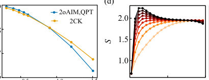
<figcaption class="paper-figure-caption"><b>Fig 4.</b> FIG. 4. (a) SΛ(E) for the 2oAIM with JS close to J(c) S . (b) Bath-topology schematic for the local-singlet–Kondo-singlet tran- sition. The top and bottom panels denote the local-singlet and Kondo phases, while dashed and solid black bonds denote weak and strong couplings. The two boxes denote orbitals, and each unit cell contains the two energy-branch bath modes at a given scale, up to a local rotation between positive and negative energies. The vertical dashed line marks the entanglement cut. (c) SΛ(0) versus Λ at the QPT of 2oAIM and 2CK. (d) SΛ(E) for 3CK. Parameters are Λ=2, U =0.5, ∆0 = 0.05, D = 1, and J(c) S = 0.2349895 in (a), and Λ = 2.5 and JK =0.2, 0.3, . . . , 1.0 (bright to...</figcaption>
</figure>
<figure class="paper-figure-card">
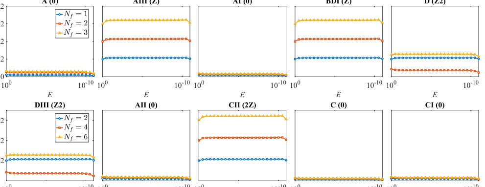
<figcaption class="paper-figure-caption"><b>Fig 5.</b> FIG. 5. Entanglement entropy for the ten AZ classes with constant identity hybridization ∆(ω) = 1Nf and symmetry-allowed local impurity Hamiltonian Hf. The local terms are defined in Table I and Eqs. (B65) and (B66). The calculation uses bandwidth D = 1, Λ = 3, and Nshell = 24 logarithmic bath shells. The labels Nf count all single-particle flavors of the impurity/hybridization matrix, including spin and orbital labels; an N-orbital spin-1/2 system therefore has Nf = 2N. Topologically trivial classes are pushed close to zero residual entropy by the local mass, while the chiral classes AIII, BDI, and CII are unaffected because Hf = 0 is symmetry enforced. The D and DIII classes show the...</figcaption>
</figure>
</div>

<p><strong>Summary.</strong> This work develops a novel method using energy-space bipartitioning to calculate entanglement entropy in quantum impurity models. It demonstrates that this EE exhibits universal, parameter-independent plateaus at Fermi-liquid fixed points, linking these values to topological invariants derived from the bath structure. The findings provide powerful diagnostic tools for distinguishing between different correlated ground states and characterizing quantum phase transitions.</p>
<p><strong>Why it may be interesting.</strong> The use of entanglement entropy as a diagnostic tool for classifying quantum critical points and determining universal properties in strongly interacting impurity systems is highly relevant to understanding open quantum systems dynamics.</p>
<details>
<summary>Detailed structure</summary>
<p><strong>Main problem.</strong> The study investigates universal behaviors of entanglement entropy (EE) by employing an energy-space bipartition in quantum impurity models, moving beyond standard real or momentum space cuts.</p>
<p><strong>Main result.</strong> For Fermi-liquid fixed points, the low-energy EE flows to parameter-independent constants related to topological edge modes; furthermore, the EE distinguishes between different correlated phases like local-singlet and Kondo-singlet states.</p>
<p><strong>Method.</strong> The analysis uses logarithmic discretization of the bath energy (poor man's scaling) and calculates entanglement entropy using DMRG on an effective Hamiltonian representation (star/MPO).</p>
<p><strong>Model / system.</strong> The focus is on quantum impurity models, including the Anderson model and various Kondo models, coupled to a fermionic bath. The formalism utilizes MPO representations for numerical stability.</p>
<p><strong>Key observables.</strong> Energy-space Entanglement Entropy ($S_{\Lambda}(E)$) and its low-energy plateau value $S_{\Lambda}(0)$.</p>
<p><strong>Important parameters / regimes.</strong> Kondo temperature ($T_K$), logarithmic discretization parameter ($\Lambda$), interaction couplings ($U, J_K$).</p>
<p><strong>Assumptions / limitations.</strong> The analysis assumes that the low-energy physics is governed by universal fixed points and relies on mapping the system to an effective 1D chain structure.</p>
<p><strong>Figures summary.</strong> Figures illustrate $S_{\Lambda}(E)$ for various models (Anderson, Kondo) showing saturation plateaus; one figure compares EE across ten Altland-Zirnbauer symmetry classes based on spectral hybridization.</p>
<p><strong>Paper structure.</strong> The paper progresses by establishing the energy-space bipartition method, applying it to Fermi-liquid fixed points to show universality and topological classification (Chiral Symmetry), examining quantum phase transitions between different correlated states, and finally generalizing the findings across various Altland-Zirnbauer symmetry classes.</p>
</details>
<details>
<summary>Abstract</summary>
<p>Entanglement entropy (EE) is commonly studied using real-space bipartitions. We show that, in quantum impurity models, an energy-space bipartition, equivalent to the momentum-space bipartition of the bath, can display universal behavior. Motivated by poor man's scaling, we logarithmically discretize the bath and partition it into high- and low-energy sectors. For models with Fermi-liquid fixed points, including the Anderson model and fully screened or underscreened Kondo models, the low-energy EE flows to constants independent of model parameters. These constants are integer multiples of $\ln 2$ plus corrections that depend only on the logarithmic discretization parameter $Λ$. We show that scale invariance of the fixed-point wavefunction in energy space maps to effective translation invariance along a one-dimensional chain, allowing the fixed points to be classified by one-dimensional topological band theory. With low-energy chiral symmetry, each $\ln 2$ contribution originates from a topological edge mode. We also study transitions between distinct Fermi-liquid fixed points using the local-singlet--Kondo-singlet transition in a two-orbital Anderson model driven by an inter-orbital antiferromagnetic coupling. The local-singlet phase has an effectively decoupled impurity and nearly vanishing EE, whereas the Kondo-singlet phase has finite EE larger than $\ln 2$ per spin and orbital. When chiral symmetry holds at low energies, this distinction corresponds to a topological transition of the effective bath chain. At the non-Fermi-liquid critical point, the EE develops an unstable plateau. Its $Λ$ dependence resembles that of the overscreened two-channel Kondo model, supporting universality within the same non-Fermi-liquid universality class.</p>
</details>
<p><sub><a href="#top">↑ back to top</a></sub></p>

<p><a id="paper-2607.28536"></a></p>
<h3 id="when-quantum-thermal-states-look-classical"><a href="http://arxiv.org/abs/2607.28536v1">When quantum thermal states look classical</a></h3>
<p><strong>Authors:</strong> Harald Putterman, Alexander Zlokapa, Jordan Cotler<br>
<strong>Type:</strong> theory · <strong>Category:</strong> statistical mechanics · <strong>PDF:</strong> <a href="https://arxiv.org/pdf/2607.28536v1">https://arxiv.org/pdf/2607.28536v1</a><br>
<strong>Analysis basis:</strong> full PDF text, analyzed in chunks
<strong>Topic relevance:</strong> 🔥 <code>entanglement &amp; information structure</code> <strong>4/5</strong> · <code>non-equilibrium dynamics</code> <strong>3/5</strong> · <code>non-equilibrium universality</code> <strong>2/5</strong> · <code>Keldysh / 2PI / non-Gaussian methods</code> <strong>1/5</strong> · <code>analog quantum simulation</code> <strong>1/5</strong> · <code>correlated / nonlocal dissipation</code> <strong>1/5</strong> · <code>driven-dissipative phase transition</code> <strong>1/5</strong> · <code>methods for driven-dissipative</code> <strong>1/5</strong> · <code>scars &amp; prethermalization</code> <strong>1/5</strong></p>
<div class="figure-strip-hint">↔ Scroll figures horizontally</div>
<div class="paper-figures-scroll">
<figure class="paper-figure-card">
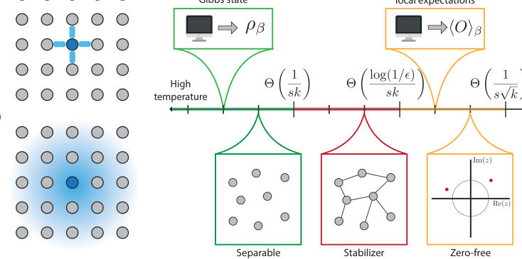
<figcaption class="paper-figure-caption"><b>Fig 1.</b> Figure 1: Properties of long-range interacting systems. (a) Depiction of a local Hamiltonian with bounded degree, where each site only interacts with a finite number of sites. (b) Schematic of a long-range interacting system where each site can interact with all of the sites in the lattice. (c) Inverse temperatures β at which all long-range Hamiltonians are guaranteed to be physically or computationally classical.</figcaption>
</figure>
<figure class="paper-figure-card">
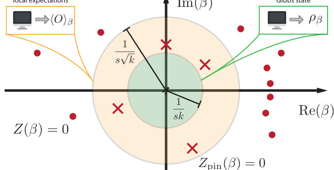
<figcaption class="paper-figure-caption"><b>Fig 2.</b> Figure 2: Implications of zero-freeness for phase transitions and classical algorithms. Red dots indicate where the partition function evaluates to zero, Z(β) = Tr  e−βH = 0. A phase transition is defined by Lee-Yang theory to be an extensive density of complex zeros of Z(β) approaching the real axis at some β∗, causing limn→∞1</figcaption>
</figure>
<figure class="paper-figure-card">
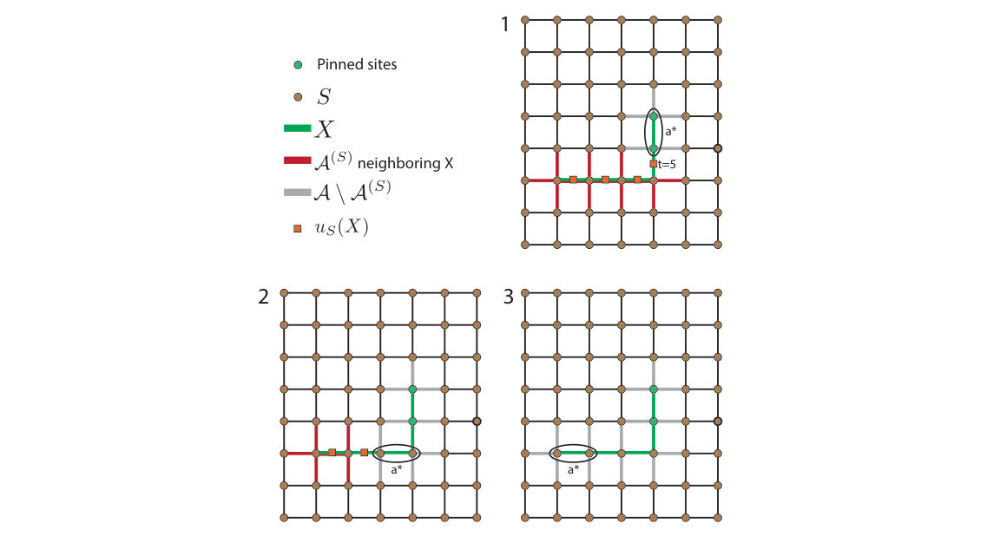
<figcaption class="paper-figure-caption"><b>Fig 3.</b> Figure 3: An example of how the pinning algorithm works. Vertices correspond to qubits and the edges to the terms of the Hamiltonian which are all weight 2. S corresponds to the unpinned sites, X to the current monomial, A(S) to the terms of the Hamiltonian which are fully supported on the unpinned sites, and uS(X) are the terms which make up X that touch an unpinned site. The situation depicted is the particularly adversarial setting where the algorithm repeatedly samples the branch corresponding to p1, where the monomial stays the same but the coefficient c in I + cP grows. The initial sampling depicted in (1) selects a monomial of length t = 5 indicated with the green edges. Subsequent...</figcaption>
</figure>
</div>

<p><strong>Summary.</strong> This paper rigorously maps out a hierarchy of transitions where quantum Gibbs states lose their non-classical features (like entanglement) as temperature decreases. By analyzing long-range Pauli Hamiltonians, the authors establish distinct critical temperatures for separability and other classical limits. This work provides polynomial-time classical algorithms to estimate thermal expectations even when these quantum correlations are present.</p>
<p><strong>Why it may be interesting.</strong> This work provides rigorous mathematical tools to characterize when complex quantum many-body states simplify into classically describable forms at finite temperatures, which is crucial for understanding thermalization dynamics.</p>
<details>
<summary>Detailed structure</summary>
<p><strong>Main problem.</strong> The paper establishes a hierarchy of 'classical-to-quantum transitions' for quantum Gibbs states as the system is cooled from high temperature.</p>
<p><strong>Main result.</strong> It proves that features like entanglement death and separability persist down to finite temperatures, forming distinct transition scales independent of system size.</p>
<p><strong>Method.</strong> The authors use new cluster expansion techniques and randomized sampling approaches to analyze the partition function and state properties.</p>
<p><strong>Model / system.</strong> The study focuses on quantum systems governed by long-range Pauli Hamiltonians ($H$) with bounded local interaction strength, allowing for analysis beyond previously restricted models.</p>
<p><strong>Key observables.</strong> Separability (unentangled states), Stabilizerness (stabilizer representation), Correlation Decay, and the zero-free radius of the partition function $Z(z)$.</p>
<p><strong>Important parameters / regimes.</strong> The transition scales are characterized by parameters like $eta_{	ext{sep}} = \Theta(1/(sk))$, $eta_{	ext{stab}}$, and the infinite-temperature phase scale $\Theta(1/(s\sqrt{k}))$.</p>
<p><strong>Assumptions / limitations.</strong> The results apply to long-range Pauli Hamiltonians with locality $k$ and strength $s$, utilizing advanced cluster expansion methods.</p>
<p><strong>Figures summary.</strong> Figure 1 schematically compares various physical properties (separability, phase transitions) across different temperature thresholds based on the system parameters $s, k,$ and $\epsilon$.</p>
<p><strong>Paper structure.</strong> The paper progresses by first establishing bounds related to the infinite-temperature phase using Lee-Yang theory, then deriving specific transition scales for separability and stabilizer structure, culminating in polynomial-time classical algorithms for thermal expectation estimation.</p>
</details>
<details>
<summary>Abstract</summary>
<p>At high temperature, quantum Gibbs states retain several classical features of the maximally mixed state: the absence of entanglement, the absence of magic, analyticity of the partition function, correlation decay, and algorithmic tractability. We prove new and sharp bounds showing that these features persist down to finite temperatures independent of system size, but fail at distinct inverse-temperature scales, forming a hierarchy of classical-to-quantum transitions. Our results hold for long-range Pauli interactions with bounded strength at every site. Despite such all-to-all interactions, we show that the death of entanglement occurs at constant temperature, resolving an open question of Rouze, Franca and Alhambra (STOC'25). We give a polynomial-time classical algorithm that prepares Gibbs states up to the death of entanglement transition. Notably, this is asymptotically colder than temperatures at which quantum Gibbs samplers are known to mix quickly, as well as the original separability temperature of Bakshi et al. (FOCS'24), which we improve to be tight up to constants. At asymptotically even colder temperatures, we show that the Gibbs state remains in the thermodynamic infinite-temperature phase. This leads to polynomial-time classical algorithms for estimating thermal expectations despite both entanglement and magic, and the resolution of a correlation decay conjecture of Harrow, Mehraban and Soleimanifar (STOC'20).</p>
</details>
<p><sub><a href="#top">↑ back to top</a></sub></p>

<p><a id="paper-2607.27388"></a></p>
<h3 id="area-information-trade-offs-in-acceleration-radiation-from-atoms-falling-into-black-holes"><a href="http://arxiv.org/abs/2607.27388v1">Area-Information Trade-Offs in Acceleration Radiation from Atoms Falling into Black Holes</a></h3>
<p><strong>Authors:</strong> Yusef Maleki, Gustavo Valdivia-Mera, Carlos R. Ordonez, Horacio E. Camblong, Marlan O. Scully<br>
<strong>Type:</strong> theory · <strong>Category:</strong> other · <strong>PDF:</strong> <a href="https://arxiv.org/pdf/2607.27388v1">https://arxiv.org/pdf/2607.27388v1</a><br>
<strong>Analysis basis:</strong> full PDF text, analyzed in chunks
<strong>Topic relevance:</strong> 🔥 <code>entanglement &amp; information structure</code> <strong>4/5</strong> · <code>Keldysh / 2PI / non-Gaussian methods</code> <strong>3/5</strong> · <code>non-equilibrium dynamics</code> <strong>2/5</strong> · <code>non-equilibrium universality</code> <strong>2/5</strong> · <code>correlated / nonlocal dissipation</code> <strong>1/5</strong> · <code>driven-dissipative phase transition</code> <strong>1/5</strong> · <code>methods for driven-dissipative</code> <strong>1/5</strong></p>
<div class="figure-strip-hint">↔ Scroll figures horizontally</div>
<div class="paper-figures-scroll">
<figure class="paper-figure-card">
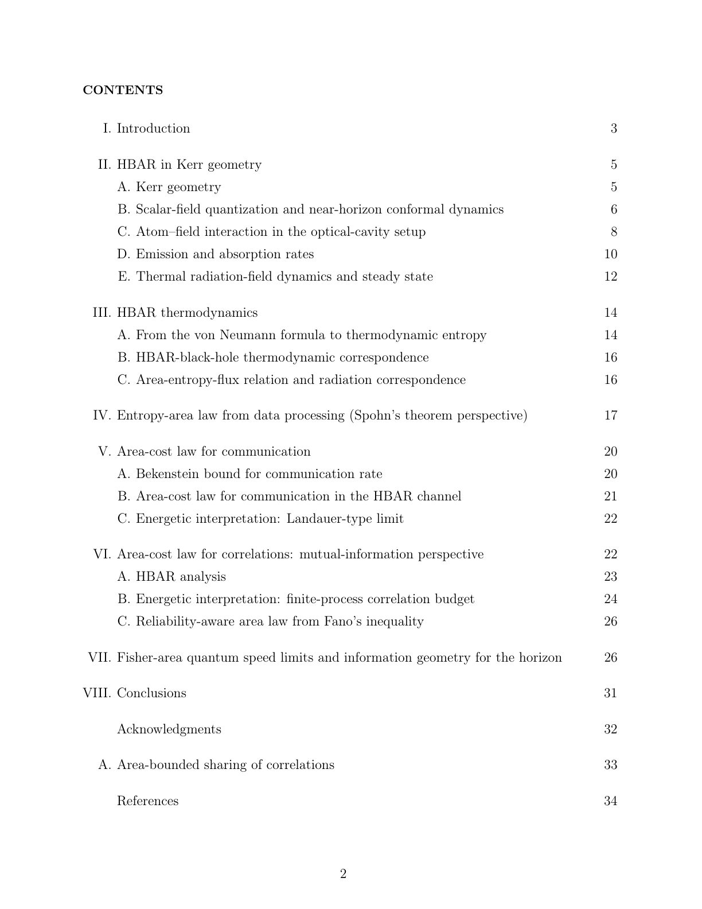
<figcaption class="paper-figure-caption"><b>Fig 1.</b> Low-resolution page preview, page 2</figcaption>
</figure>
<figure class="paper-figure-card">
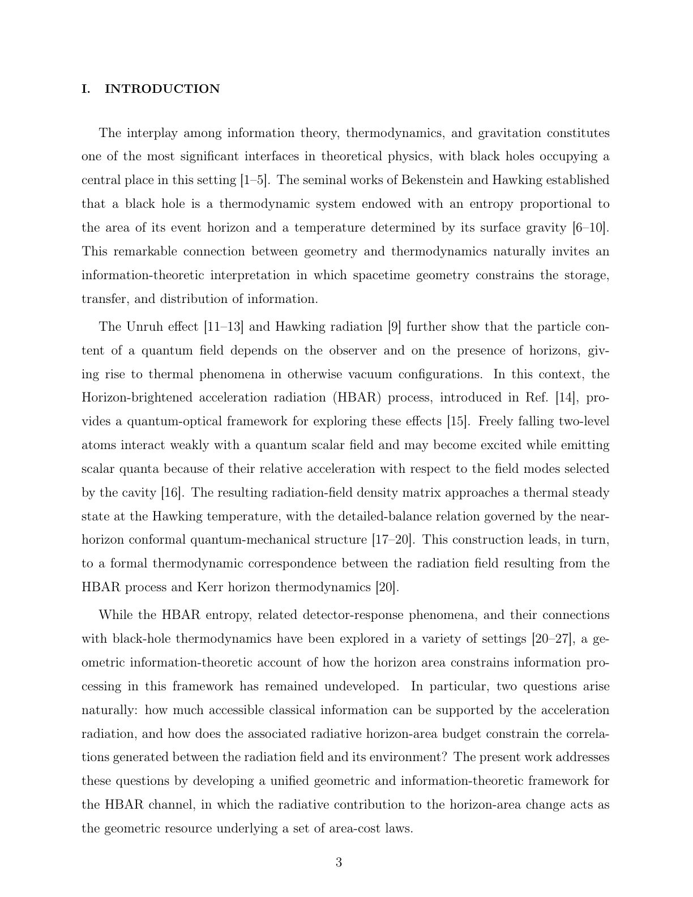
<figcaption class="paper-figure-caption"><b>Fig 2.</b> Low-resolution page preview, page 3</figcaption>
</figure>
<figure class="paper-figure-card">
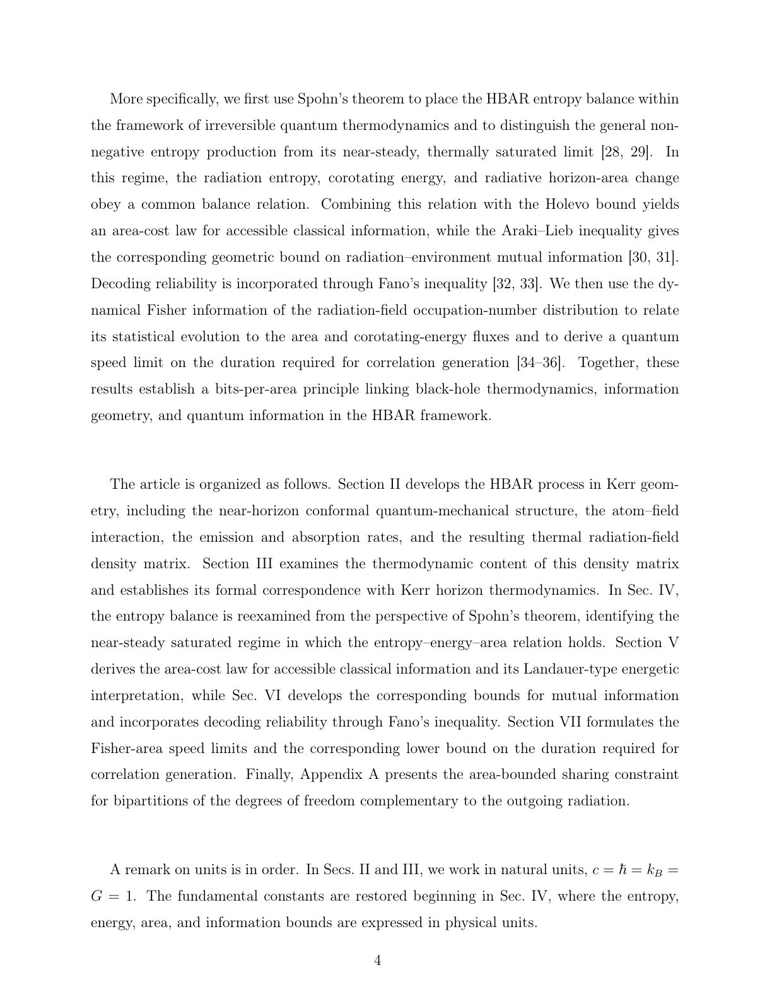
<figcaption class="paper-figure-caption"><b>Fig 3.</b> Low-resolution page preview, page 4</figcaption>
</figure>
<figure class="paper-figure-card">
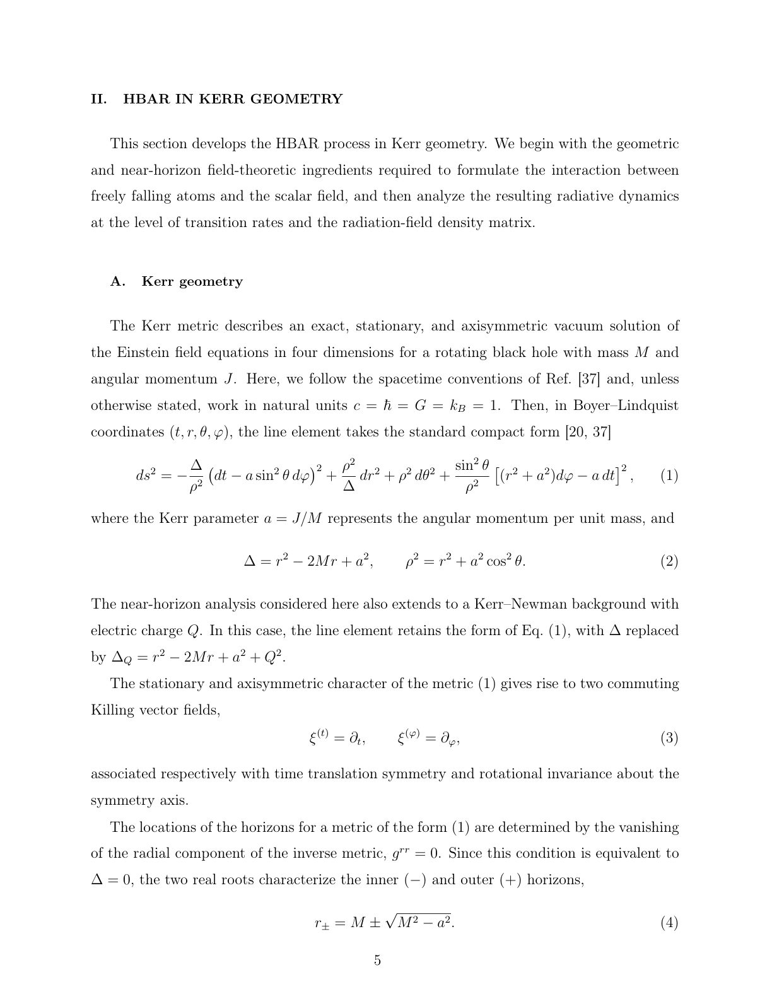
<figcaption class="paper-figure-caption"><b>Fig 4.</b> Low-resolution page preview, page 5</figcaption>
</figure>
<figure class="paper-figure-card">
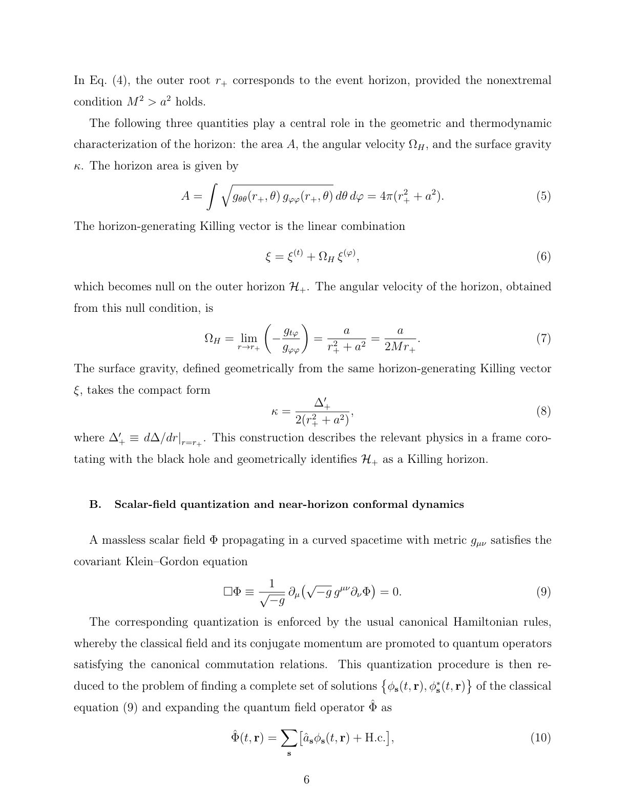
<figcaption class="paper-figure-caption"><b>Fig 5.</b> Low-resolution page preview, page 6</figcaption>
</figure>
</div>

<p><strong>Summary.</strong> This work develops an information-theoretic framework for understanding radiation emitted by atoms falling into black holes. It shows that the change in the black hole's horizon area acts as a quantifiable resource budget for the information carried away by the radiation field. Ultimately, it establishes fundamental 'bits-per-area' limits connecting gravity, thermodynamics, and quantum information.</p>
<p><strong>Why it may be interesting.</strong> It provides a deep connection between general relativity (black hole thermodynamics), quantum field theory in curved spacetime, and fundamental principles of quantum information theory, which is highly relevant for theoretical physicists studying open quantum systems near extreme gravitational environments.</p>
<details>
<summary>Detailed structure</summary>
<p><strong>Main problem.</strong> The paper develops a geometric theory linking black hole horizon area changes to information processing limits within the Horizon-brightened acceleration radiation (HBAR) channel.</p>
<p><strong>Main result.</strong> It establishes a 'bits-per-area principle' that constrains accessible classical information and mutual information based on the radiative horizon-area budget.</p>
<p><strong>Method.</strong> The analysis combines quantum field theory in curved spacetime with advanced concepts from information geometry, utilizing bounds like Holevo's and Fano's inequalities.</p>
<p><strong>Model / system.</strong> The system involves atoms falling into a black hole described by Kerr geometry, leading to the emission of HBAR. The physics is modeled using quantization of a scalar field ($\Phi$) interacting with the atomic dipole moment.</p>
<p><strong>Key observables.</strong> Accessible classical information ($I_{	ext{class}}$), mutual information ($\Delta I_{	ext{M}}$), Fisher Information ($I_F$), and the radiative horizon-area change ($\dot{A}_{	ext{rad}}$).</p>
<p><strong>Important parameters / regimes.</strong> The analysis focuses on the near-steady, thermally saturated regime; key parameters include the surface gravity ($\kappa$) and angular velocity ($\Omega_H$).</p>
<p><strong>Assumptions / limitations.</strong> The primary assumption is that the radiative contribution to the horizon area change acts as the geometric resource governing information flow.</p>
<p><strong>Paper structure.</strong> The paper builds from a quantum-optical description of atom-field interaction (HBAR) to derive thermodynamic correspondences, then applies information geometry tools (Fisher/Bures lengths) to establish area-cost laws and speed limits on correlation generation.</p>
</details>
<details>
<summary>Abstract</summary>
<p>We develop a geometric theory of information processing in the Horizon-brightened acceleration radiation (HBAR) channel, in which the radiative horizon-area change provides an entropy budget for the information carried by the radiation field. Building on the quantum-optical description of atom--field interactions near the horizon and the resulting HBAR thermodynamic correspondence, we derive area-cost laws in the near-steady, thermally saturated regime. The accessible classical information and the mutual information generated between the radiation field and its environment are bounded by the associated radiative horizon-area budget. Reliability is incorporated through Fano's inequality, which translates a prescribed decoding error probability into an area requirement. We further derive Fisher-information speed limits that constrain the statistical evolution of the radiation field and place a lower bound on the duration required for correlation generation. Together, these results establish a bits-per-area principle linking black-hole thermodynamics, information geometry, and quantum information in the HBAR framework.</p>
</details>
<p><sub><a href="#top">↑ back to top</a></sub></p>

<p><a id="paper-2607.27839"></a></p>
<h3 id="ensemble-theory-of-thermodiffusion"><a href="http://arxiv.org/abs/2607.27839v1">Ensemble theory of thermodiffusion</a></h3>
<p><strong>Authors:</strong> R. Belousov, J. Elliott, A. Erzberger<br>
<strong>Type:</strong> theory · <strong>Category:</strong> statistical mechanics · <strong>PDF:</strong> <a href="https://arxiv.org/pdf/2607.27839v1">https://arxiv.org/pdf/2607.27839v1</a><br>
<strong>Analysis basis:</strong> full PDF text, analyzed in chunks
<strong>Topic relevance:</strong> 🔥 <code>non-equilibrium dynamics</code> <strong>4/5</strong> · <code>methods for driven-dissipative</code> <strong>3/5</strong> · <code>non-equilibrium universality</code> <strong>3/5</strong> · <code>Keldysh / 2PI / non-Gaussian methods</code> <strong>1/5</strong> · <code>correlated / nonlocal dissipation</code> <strong>1/5</strong> · <code>driven-dissipative phase transition</code> <strong>1/5</strong></p>
<div class="figure-strip-hint">↔ Scroll figures horizontally</div>
<div class="paper-figures-scroll">
<figure class="paper-figure-card">
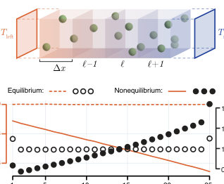
<figcaption class="paper-figure-caption"><b>Fig 1.</b> FIG. 1. Molecular-dynamics simulations of a hard-core gas in a nonequilibrium steady state sustained by thermalizing walls at Tleft/Tref = 0.9 and Tright/Tref = 0.5 (Tref: reference temperature at equilibrium; kB = 1 in arbitrary units, [42, Sec. S1]). Histograms of particle density ρℓand kinetic tem- perature Tℓexhibit opposing gradients when Tleft ̸= Tright .</figcaption>
</figure>
<figure class="paper-figure-card">
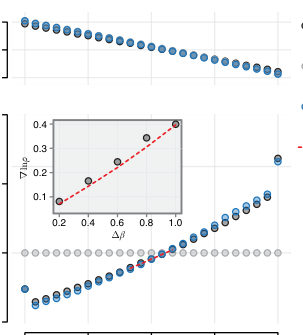
<figcaption class="paper-figure-caption"><b>Fig 2.</b> FIG. 3. Profiles of temperature (a) and density (b) for a hard-core gas in a nonequilibrium steady state sustained by thermalizing walls at kBTleft = 0.9, kBTright = 0.5 (arb. u.). Our coarse-grained model with kinetic connectivity, cali- brated from equilibrium data at kBTref = 1.0, accurately pre- dicts histograms of temperature and density in MD simula- tions. The nearest-neighbor scheme fails to reproduce the density distribution in the hard-core gas subject to the tem- perature drop. Linear-response formulas [42, Eqs. (S17)– (S19)] for the Soret coefficient ST and Eq. (13) accurately describe the gradient ∇ln ρ|ℓ=13 ≈−ST ∇T over a wide range of differences ∆β = (kBTright)−1...</figcaption>
</figure>
</div>

<p><strong>Summary.</strong> This paper develops an ensemble theory approach to model thermodiffusion in a hard-core gas under a temperature gradient. By using path-ensemble theory calibrated against equilibrium simulations, the authors successfully predict non-equilibrium mass and temperature profiles. The key finding is that incorporating detailed kinetic connectivity information (KC) into the graph structure is essential for accurately capturing coupled thermal and diffusive transport phenomena.</p>
<p><strong>Why it may be interesting.</strong> While focused on classical gas dynamics, the rigorous application of ensemble theory to non-equilibrium steady states—especially deriving macroscopic coefficients from microscopic path statistics—provides a powerful theoretical template applicable to open quantum systems far from equilibrium.</p>
<details>
<summary>Detailed structure</summary>
<p><strong>Main problem.</strong> The study of thermodiffusion, which describes the coupling between heat flow and matter transport (diffusion) in a system subjected to a temperature gradient.</p>
<p><strong>Main result.</strong> The path-ensemble theory accurately predicts non-equilibrium mass distribution profiles for a hard-core gas under $\Delta T 
eq 0$, yielding a simple formula for the Soret coefficient ($S_T$).</p>
<p><strong>Method.</strong> The authors employ path-ensemble theory, calibrating dynamics using microcanonical principles derived from equilibrium simulations to model non-equilibrium transport.</p>
<p><strong>Model / system.</strong> The system is a hard-core gas confined between two thermalizing walls. The dynamics are modeled on a lattice structure, governed by transition probabilities derived from maximizing the $\mu$-caliber subject to energy and matter conservation constraints.</p>
<p><strong>Key observables.</strong> Mass distribution ($
ho$), kinetic temperature ($T$), and the Soret coefficient ($S_T = D_T / D$).</p>
<p><strong>Important parameters / regimes.</strong> Temperature gradient ($\Delta T$), lattice site energies ($\epsilon_i$), and time/space discretization parameters.</p>
<p><strong>Assumptions / limitations.</strong> The theory assumes all microscopic realizations of a path are equally probable, and it compares two graph connectivity schemes (Kinetic Connectivity vs. Nearest-Neighbor) to capture the necessary microscopic details.</p>
<p><strong>Figures summary.</strong> Figure 1 shows molecular dynamics results ($
ho$ and $T$) exhibiting opposing gradients when $\Delta T 
eq 0$. Figure 3 compares MD simulations with predictions from the KC model (accurate) versus the NN scheme (fails) for non-equilibrium profiles.</p>
<p><strong>Paper structure.</strong> The paper establishes the physical problem, develops the path-ensemble theory based on microcanonical principles, compares two graph connectivity schemes (KC vs. NN), and demonstrates that only the detailed Kinetic Connectivity approach correctly predicts the steady-state transport properties.</p>
</details>
<details>
<summary>Abstract</summary>
<p>Heat flow sustained by a temperature difference generates a gradient of matter as observed, for example, in atomistic simulations of hard-core gases. We use path-ensemble theory to represent the coupled thermal and diffusive transport by dynamics on a graph. Calibrated from a single equilibrium simulation, this model accurately predicts nonequilibrium mass distribution in a hard-core gas across a wide range of applied temperature gradients. It also enables estimation of transport properties, such as the Soret coefficient, using analytical expressions.</p>
</details>
<p><sub><a href="#top">↑ back to top</a></sub></p>

<p><a id="paper-2607.28184"></a></p>
<h3 id="entanglement-swapping-with-integrated-narrowband-photon-sources-for-quantum-repeaters"><a href="http://arxiv.org/abs/2607.28184v1">Entanglement Swapping with Integrated Narrowband Photon Sources for Quantum Repeaters</a></h3>
<p><strong>Authors:</strong> Mingsong Wu, Leili Esmaeilifar, Rui Ning Wang, Tobias Kippenberg, Rob Thew, Tiff Brydges<br>
<strong>Type:</strong> experiment · <strong>Category:</strong> quantum information and computing · <strong>PDF:</strong> <a href="https://arxiv.org/pdf/2607.28184v1">https://arxiv.org/pdf/2607.28184v1</a><br>
<strong>Analysis basis:</strong> full PDF text, analyzed in chunks
<strong>Topic relevance:</strong> 🔥 <code>QC/QI experiment</code> <strong>4/5</strong> · <code>interference shaping light</code> <strong>3/5</strong> · <code>quantum optics experiment</code> <strong>3/5</strong> · <code>entanglement &amp; information structure</code> <strong>2/5</strong> · <code>quantum measurements</code> <strong>1/5</strong></p>
<div class="figure-strip-hint">↔ Scroll figures horizontally</div>
<div class="paper-figures-scroll">
<figure class="paper-figure-card">
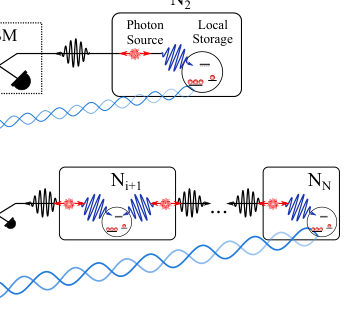
<figcaption class="paper-figure-caption"><b>Fig 1.</b> Fig. 1. Simplified schematic of one implementation of a quantum repeater network. a) An elementary quantum repeater link in the network. Nodes 𝑁1 and 𝑁2 prepare an entangled resource state. A part of this state is sent through a quantum channel to an intermediate Bell State Measurement (BSM) station, with the remaining part stored locally [10,13,14]. Entanglement is distributed between 𝑁1 and 𝑁2 through a BSM, which projects the remaining states at 𝑁1 and 𝑁2 into an entangled state. b) Schematic of full repeater link, allowing nodes 𝑁1 and 𝑁𝑁to share an entangled state through the use of additional nodes.</figcaption>
</figure>
<figure class="paper-figure-card">
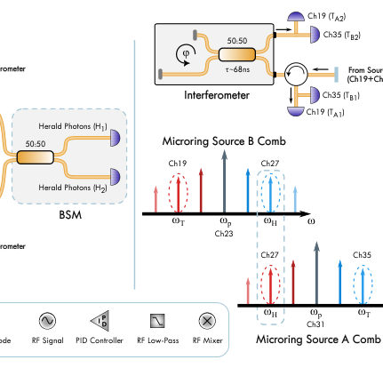
<figcaption class="paper-figure-caption"><b>Fig 2.</b> Fig. 2. Simplified schematic of the experimental setup. The general cavity-lock feedback loops are shown for each source. The photon pairs from each source are demultiplexed according to the ITU C-band frequency grid: Ch27 photons are interfered at the central BSM station, with the remaining Ch19 and Ch35 photons passed through a folded Franson interferometer for the time-bin entanglement measurement. A detailed schematic of the experimental setup is given in the supplementary material.</figcaption>
</figure>
<figure class="paper-figure-card">
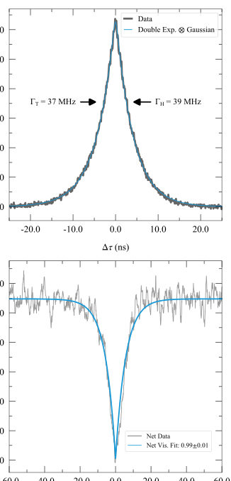
<figcaption class="paper-figure-caption"><b>Fig 3.</b> Fig. 3. a) and b) Cross-correlation measurements for Source A and Source B, respectively. Data is shown in black, with the blue lines fits to the data from a convolution of a double exponential with a Gaussian. The extracted photon linewidths are: Γ𝑇= 56 MHz and Γ𝐻= 51 MHz (Source A), Γ𝑇= 37 MHz and Γ𝐻= 39 MHz (Source B). c) and d) Background-subtracted (net) HOM interference measurements with coincidence window of ±15 ns and ±0.7 ns respectively. Both measurements give a fitted net visibility of 0.99 ± 0.01. For all four plots, the data is given as thick gray lines and the fits are thin blue lines (see Supplementary Material for the fit models).</figcaption>
</figure>
<figure class="paper-figure-card">
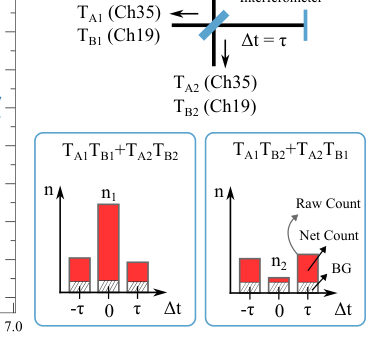
<figcaption class="paper-figure-caption"><b>Fig 4.</b> Fig. 4. a) Interferometric contrast of the entanglement swapping measurement as a function of the phase setting of the swapped state, with the BSM and target photon coincidence windows being ±0.7 ns and ±1.5 ns respectively. The raw visibility is 0.54 ± 0.04, with a background subtracted visibility of 0.88 ± 0.06, with the reduced chi-squared for the net fit being 𝜒2 𝜈= 1.58. b) Conceptual diagrams of how coincidences are measured between the two sources’ target photon streams and used to calculate the interferometric contrast for each phase setting. For the C-band Ch35 (Source A) and Ch19 (Source B) photon modes, they each have two interferometer output signal streams, giving four...</figcaption>
</figure>
</div>

<p><strong>Summary.</strong> The research demonstrates entanglement swapping using integrated photonic chips that generate narrowband, high-purity entangled photons. By successfully stabilizing the system across large frequency differences and measuring a high swapped state visibility, the authors overcome key technical hurdles for building practical, field-deployable quantum repeaters.</p>
<p><strong>Why it may be interesting.</strong> This work directly tackles hardware implementation barriers for quantum networks by integrating photon sources and achieving necessary spectral purity and stability required to interface with solid-state quantum memories.</p>
<details>
<summary>Detailed structure</summary>
<p><strong>Main problem.</strong> The primary challenge is implementing field-deployed quantum repeaters, which requires integrated photonics sources generating narrowband photons compatible with atomic quantum memories while maintaining system-level stabilization.</p>
<p><strong>Main result.</strong> The authors successfully demonstrated entanglement swapping using two independent integrated sources with narrow bandwidths, achieving a net swapped state visibility of 0.88 $\pm$ 0.06, sufficient to violate a Bell inequality.</p>
<p><strong>Method.</strong> Entanglement swapping was performed by interfering herald photons at a central Beam State Measurement (BSM) station, projecting the remaining target photons onto an entangled time-bin state.</p>
<p><strong>Model / system.</strong> The experiment utilizes integrated photonics platforms (SiN waveguides with MRRs) pumped by CW lasers to generate energy-time entangled photon pairs. The setup mimics entanglement swapping between two independent repeater nodes operating at different frequencies.</p>
<p><strong>Key observables.</strong> Background-subtracted (net) HOM visibility of $0.99 \pm 0.01$ and net swapped state visibility $\mathcal{V}=0.88 \pm 0.06$.</p>
<p><strong>Important parameters / regimes.</strong> Narrow bandwidths ($<60 	ext{ MHz}$), phase/frequency stabilization across $1.6 	ext{ THz}$, and the ability to operate with independent, non-degenerate sources.</p>
<p><strong>Assumptions / limitations.</strong> The analysis relies on post-selection on successful herald clicks, and background subtraction is necessary due to noise from Raman scattering in the cladding.</p>
<p><strong>Figures summary.</strong> Figures schematically illustrate the quantum repeater network and the experimental setup, detailing cavity-lock feedback loops and BSM components. Figure 4 specifically shows interferometric contrast measurements versus phase setting.</p>
<p><strong>Paper structure.</strong> The paper addresses fundamental challenges by demonstrating entanglement swapping using integrated sources. It details the use of two independent sources, measures high HOM visibility, achieves large frequency stabilization, and quantifies the final swapped state visibility against Bell inequality violation criteria.</p>
</details>
<details>
<summary>Abstract</summary>
<p>Promising implementations of first generation quantum repeaters are predicted to require atomic-based quantum memory systems interfaced with photonic sources. Integrated photonics provides a promising solution for fibre-based, field-deployed operation of quantum repeaters, however many leading quantum memory platforms require narrow-bandwidth photons that are challenging to generate with integrated photonics. Narrowband photons also present significant technical challenges when implementing entanglement-swapping, particularly with regards to systems-level stabilisation. This work addresses some of these fundamental and technical challenges, by demonstrating entanglement-swapping using state-of-the-art integrated photon sources with bandwidths compatible with multiple atomic-based quantum memory platforms. We obtained a background-subtracted (net) HOM visibility of 0.99$\,\pm\,$0.01, showing high photon indistinguishability and purity, with a net swapped state visibility of $\mathcal{V}$=0.88$\,\pm\,$0.06 demonstrating that the final entanglement would be sufficient to violate a Bell inequality. The experiment used independent pump lasers for each photon pair source, with highly different frequencies to mimic entanglement swapping between different repeater nodes or platforms. Phase and frequency stabilisation spanning 1.6 THz was achieved using all-fibre, commercially-available components. These results address important challenges in implementing field-deployed quantum repeaters, from the integrated photonic solutions for narrowband photon pairs, to systems-level stabilisation between independent quantum repeater nodes.</p>
</details>
<p><sub><a href="#top">↑ back to top</a></sub></p>

<p><a id="paper-2607.27998"></a></p>
<h3 id="mpemba-effect-in-a-chemomechanical-model-of-the-kinesin-molecular-motor"><a href="http://arxiv.org/abs/2607.27998v1">Mpemba effect in a chemomechanical model of the Kinesin molecular motor</a></h3>
<p><strong>Authors:</strong> Karthik Cheruvary, Arnab Pal<br>
<strong>Type:</strong> theory · <strong>Category:</strong> statistical mechanics · <strong>PDF:</strong> <a href="https://arxiv.org/pdf/2607.27998v1">https://arxiv.org/pdf/2607.27998v1</a><br>
<strong>Analysis basis:</strong> full PDF text, analyzed in chunks
<strong>Topic relevance:</strong> 🔥 <code>non-equilibrium dynamics</code> <strong>4/5</strong> · <code>methods for driven-dissipative</code> <strong>3/5</strong> · <code>non-equilibrium universality</code> <strong>3/5</strong> · <code>Keldysh / 2PI / non-Gaussian methods</code> <strong>1/5</strong> · <code>correlated / nonlocal dissipation</code> <strong>1/5</strong> · <code>driven-dissipative phase transition</code> <strong>1/5</strong></p>
<div class="figure-strip-hint">↔ Scroll figures horizontally</div>
<div class="paper-figures-scroll">
<figure class="paper-figure-card">
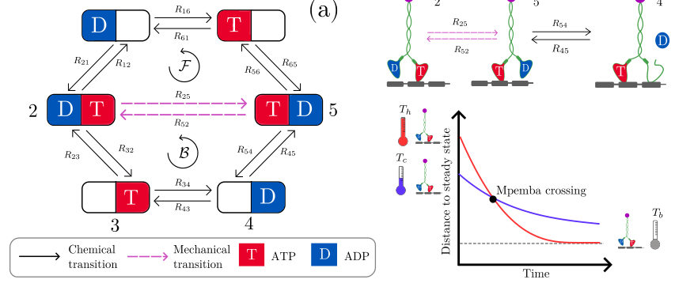
<figcaption class="paper-figure-caption"><b>Fig 1.</b> Figure 1: Panel (a): The chemo mechanical network representing Kinesin motion. This numbering of states will be used throughout. F is the forward cycle and B is the backward cycle, directed along the arrows. Panel (b): Schematic of Kinesin walker on a microtubule undergoing mechanical and chemical transitions. Panel (c) shows that the Kinesin system initially equilibrated at a higher temperature relaxes faster than the same initially equilibrated at a lower temperature, yielding Mpemba crossing.</figcaption>
</figure>
<figure class="paper-figure-card">
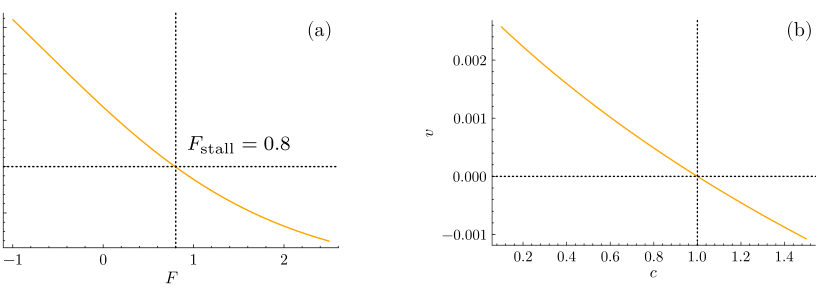
<figcaption class="paper-figure-caption"><b>Fig 2.</b> Figure 2: Non-equilibrium nature of the Kinesin depicted by the velocity defined via the current. Panel (a): Steady state velocity v vs load force F, showcasing v decreasing with increasing load and stalling at Fstall = 0.8. Other parameters are Tb = 1, s = 0.5, r = 0.1, c = 0.1, θ = 0.6. Since c ̸= 1, the network is out of equilibrium. Panel (b): Velocity v vs chemical driving c for Tb = 1, s = 0.5, r = 0.1, F = 0. c = 1 corresponds to chemical equilibrium, resulting in v = 0.</figcaption>
</figure>
<figure class="paper-figure-card">
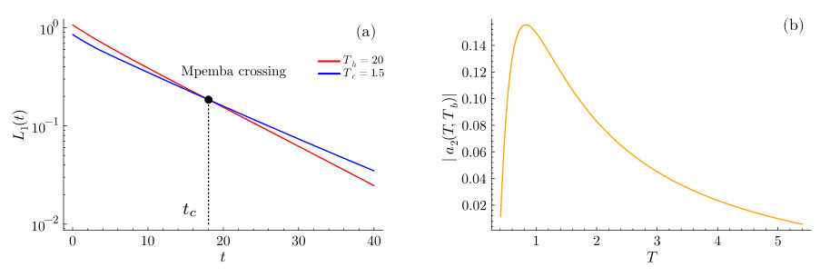
<figcaption class="paper-figure-caption"><b>Fig 3.</b> Figure 3: Examples illustrating equivalence of the spectral a2 condition with the Mpemba effect. Panel (a): Distance to steady state as a function of time for steady states prepared at Tc = 1.5 &amp; Th = 20, showing a Mpemba crossing at a time tc. Parameters are Tb = 0.4, r = 0.1, s = 2.5. Panel (b): |a2(T, Tb)| vs T with , where the a2 curve displays non-monotonicity as a function of T allowing for initial states that satisfy Eq. (18). Other parameters same as Fig. 3(a).</figcaption>
</figure>
<figure class="paper-figure-card">
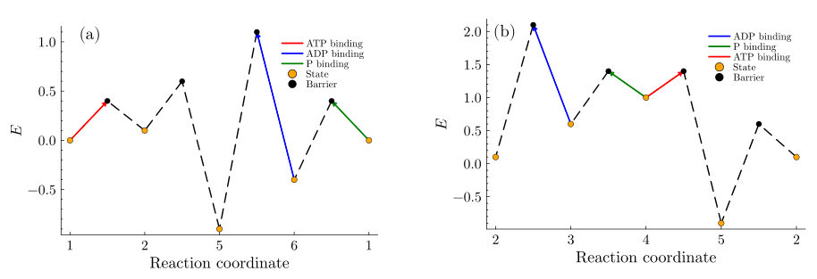
<figcaption class="paper-figure-caption"><b>Fig 4.</b> Figure 4: Energy landscape of the Kinesin walker that determines κij through Eq. 3. Solid lines denote transitions involving binding of chemical species, with color denoting type and arrow denoting direction of binding. Panel (a): Energy landscape for the forward cycle. Panel (b): Energy landscape for the backward cycle.</figcaption>
</figure>
<figure class="paper-figure-card">
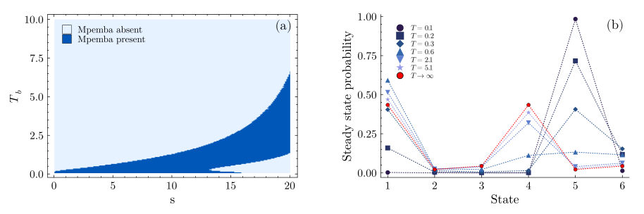
<figcaption class="paper-figure-caption"><b>Fig 5.</b> Figure 5: Panel (a): Mpemba phases in the plane of Tb and s for fixed r = 0.1 constructed from the spectral a2-condition. Panel (b): Steady state occupation probabilities for different T’s with s = 0.5, r = 0.1</figcaption>
</figure>
</div>

<p><strong>Summary.</strong> The paper investigates the Mpemba effect in the Kinesin molecular motor using a detailed chemomechanical network model. By analyzing how relaxation occurs under non-equilibrium driving (load or chemical imbalance), the authors demonstrate that this anomalous relaxation signature is directly measurable through the motor's velocity. This establishes molecular motors as a powerful platform for studying non-equilibrium physics in living systems.</p>
<p><strong>Why it may be interesting.</strong> This work applies concepts from non-equilibrium statistical mechanics (like transient dynamics and relaxation rates) to a complex biological machine, providing a concrete, experimentally accessible physical manifestation of an abstract thermodynamic phenomenon.</p>
<details>
<summary>Detailed structure</summary>
<p><strong>Main problem.</strong> The study investigates the Mpemba effect—anomalous relaxation where a system farther from equilibrium relaxes faster than one initially closer—within biologically relevant, non-equilibrium processes.</p>
<p><strong>Main result.</strong> The authors establish that the Kinesin motor model exhibits the Mpemba effect in chemical equilibrium, and crucially, they show that this anomalous relaxation signature can be directly observed via the motor's velocity, even when mechanical or chemical driving breaks detailed balance.</p>
<p><strong>Method.</strong> The analysis employs a six-state chemomechanical network model governed by a master equation formalism. Relaxation dynamics are quantified using spectral decomposition criteria (like $a_2$) and distance metrics ($ ext{L}_1$).</p>
<p><strong>Model / system.</strong> The system is the Kinesin molecular motor, modeled as a six-state kinetic network. The dynamics are controlled by external load force ($F$) and chemical driving parameters ($c$), which break detailed balance from equilibrium.</p>
<p><strong>Key observables.</strong> Motor velocity ($v(t)$), $    ext{L}_1$ distance to steady state, and spectral coefficients ($    ext{a}_2$).</p>
<p><strong>Important parameters / regimes.</strong> External load force ($F$), chemical driving parameter ($c$), and temperature/energy barriers.</p>
<p><strong>Assumptions / limitations.</strong> The model assumes separation of time scales for internal conformational fluctuations (Kramers' analogy) and that the motor velocity accurately reflects the underlying stochastic dynamics.</p>
<p><strong>Figures summary.</strong> Figures illustrate the network states, the Mpemba crossing phenomenon in this context, steady-state velocity dependence on load/driving, and how force quenches affect spectral criteria.</p>
<p><strong>Paper structure.</strong> The paper first establishes the model's equilibrium behavior. It then analyzes non-equilibrium driving (load/chemical) to show that while these break detailed balance, they preserve the qualitative Mpemba phenomenology. Finally, it demonstrates that the measurable motor velocity mirrors this anomalous relaxation signature.</p>
</details>
<details>
<summary>Abstract</summary>
<p>The Mpemba effect, wherein a system prepared farther from equilibrium relaxes faster than one initially closer to equilibrium, has been extensively investigated in a wide range of physical systems. In contrast, its role in biologically relevant non-equilibrium processes remains largely unexplored. Here, we investigate anomalous relaxation in the six-state chemomechanical network model of the Kinesin molecular motor under both equilibrium and non-equilibrium conditions. We first establish the existence of the Mpemba effect in chemical equilibrium and show that many of its qualitative features can be understood from the underlying free-energy landscape. We then examine the effects of mechanical and chemical driving, showing that breaking detailed balance primarily reshapes the Mpemba phase diagram without qualitatively altering the relaxation phenomenology over the physically relevant parameter regime. Finally, we demonstrate that the relaxation of the motor velocity also mirrors the anomalous relaxation of the underlying stochastic dynamics, thereby identifying an experimentally accessible signature of the Mpemba effect. Our results establish molecular motors as a promising baseline for studying anomalous relaxation in living systems and suggest a broader framework for exploring the Mpemba effect in non-equilibrium biochemical networks.</p>
</details>
<p><sub><a href="#top">↑ back to top</a></sub></p>

<p><a id="paper-2607.28450"></a></p>
<h3 id="quantum-steering-and-nonlocal-correlations-between-non-interacting-delocalized-electrons-under-rashba-spin-orbit-interaction"><a href="http://arxiv.org/abs/2607.28450v1">Quantum Steering and Nonlocal Correlations Between Non-Interacting Delocalized Electrons Under Rashba Spin-Orbit Interaction</a></h3>
<p><strong>Authors:</strong> Zakaria Bouafia, Mostafa Mansour<br>
<strong>Type:</strong> theory · <strong>Category:</strong> strongly correlated electrons · <strong>PDF:</strong> <a href="https://arxiv.org/pdf/2607.28450v1">https://arxiv.org/pdf/2607.28450v1</a><br>
<strong>Analysis basis:</strong> full PDF text, analyzed in chunks
<strong>Topic relevance:</strong> 🔥 <code>entanglement &amp; information structure</code> <strong>4/5</strong> · <code>analog quantum simulation</code> <strong>2/5</strong> · <code>spintronics-quantum-optics interface</code> <strong>2/5</strong> · <code>Keldysh / 2PI / non-Gaussian methods</code> <strong>1/5</strong> · <code>correlated / nonlocal dissipation</code> <strong>1/5</strong> · <code>driven-dissipative phase transition</code> <strong>1/5</strong> · <code>methods for driven-dissipative</code> <strong>1/5</strong> · <code>non-equilibrium dynamics</code> <strong>1/5</strong></p>
<div class="figure-strip-hint">↔ Scroll figures horizontally</div>
<div class="paper-figures-scroll">
<figure class="paper-figure-card">
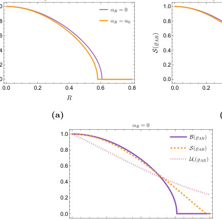
<figcaption class="paper-figure-caption"><b>Fig 1.</b> Fig. 1 Dynamics of B(ϱAB) 1a, S(ϱAB) 1b, and Uc(ϱAB) 1c as a function of R = |r−r′|</figcaption>
</figure>
<figure class="paper-figure-card">
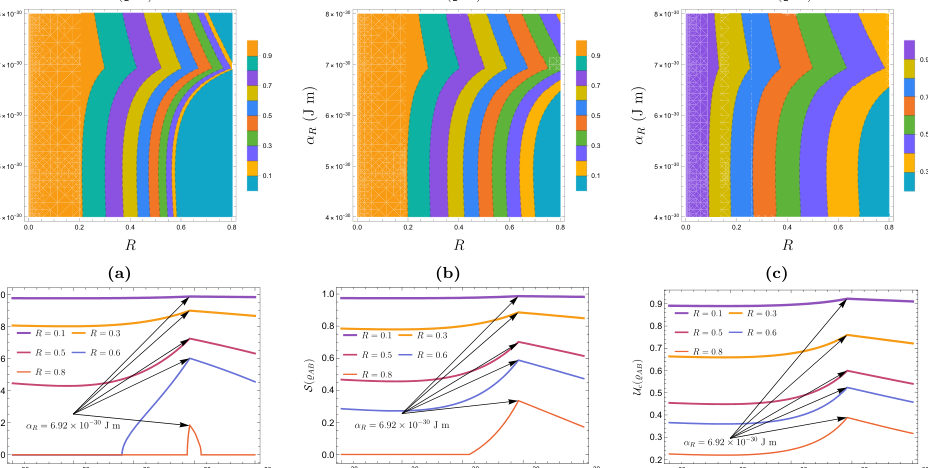
<figcaption class="paper-figure-caption"><b>Fig 2.</b> Fig. 2 Dynamics of B(ϱAB), S(ϱAB), and Uc(ϱAB) as functions of R and αR 2a-2b-2c and as functions of αR, where α0 ≤αR ≤2α0 with α0 = 3.05 × 10−11 eV m, for various fixed values of R 2d-2e-2f.</figcaption>
</figure>
<figure class="paper-figure-card">
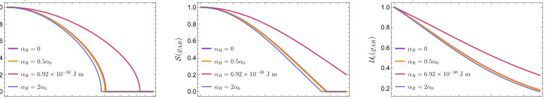
<figcaption class="paper-figure-caption"><b>Fig 3.</b> Fig. 3 Dynamics of B(ϱAB) 3a, S(ϱAB) 3b, and Uc(ϱAB) 3c in terms of R for different multiple values of α0 (αR) where α0 = 3.05 × 10−11 eV m.</figcaption>
</figure>
</div>

<p><strong>Summary.</strong> This theoretical work examines how Rashba Spin-Orbit Interaction controls nonlocal quantum correlations between two electrons in a 2DEG. By analyzing Bell nonlocality, uncertainty-induced nonlocality, and quantum steering, the authors show that tuning the RSOI strength can restore these fragile quantum resources, making it a powerful control knob for solid-state quantum physics.</p>
<p><strong>Why it may be interesting.</strong> The ability to use an external parameter like RSOI strength ($\alpha_R$) to actively tune and restore quantum correlations (nonlocality/steering) in solid-state systems is highly relevant for designing quantum information processing elements based on condensed matter platforms.</p>
<details>
<summary>Detailed structure</summary>
<p><strong>Main problem.</strong> Investigating quantum steering and nonlocal correlations between two non-interacting delocalized electrons under the influence of Rashba Spin-Orbit Interaction (RSOI).</p>
<p><strong>Main result.</strong> The study finds that all three measured quantum resources exhibit a non-monotonic recovery as RSOI strength is tuned, peaking at an optimal coupling strength. This establishes RSOI as a critical control parameter for stabilizing quantum properties against separation decay.</p>
<p><strong>Method.</strong> Theoretical analysis using the two-fermion density matrix and calculating specific inequalities (CHSH, CJWR) to quantify different nonlocality measures.</p>
<p><strong>Model / system.</strong> The system is modeled as two non-interacting delocalized electrons in a Two-Dimensional Electron Gas (2DEG), specifically focusing on the Bi/Ag(111) heterostructure. The Hamiltonian includes the Rashba SOI term, leading to spin-momentum locking.</p>
<p><strong>Key observables.</strong> Bell Nonlocality ($B(\varrho_{AB})$), Uncertainty-Induced Nonlocality ($U_c(\varrho_{AB})$), and Quantum Steering ($S(\varrho_{AB})$).</p>
<p><strong>Important parameters / regimes.</strong> RSOI strength ($\alpha_R$), Inter-electron separation ($R$), and the baseline RSOI value ($\alpha_0 = 3.05 	imes 10^{-11} 	ext{ eV m}$).</p>
<p><strong>Assumptions / limitations.</strong> The electrons are treated as non-interacting, and Coulomb interactions are excluded from the primary analysis.</p>
<p><strong>Figures summary.</strong> Figures illustrate the dynamics of $B$, $S$, and $U_c$ as functions of electron separation ($R$) and RSOI strength ($\alpha_R$), showing non-monotonic behavior for all metrics.</p>
<p><strong>Paper structure.</strong> The paper analyzes the impact of tuning $\alpha_R$ on three distinct quantum correlation measures ($B, S, U_c$) in a 2DEG system, comparing results with and without RSOI to pinpoint how spin-orbit coupling acts as a tunable control mechanism for these resources.</p>
</details>
<details>
<summary>Abstract</summary>
<p>We investigate quantum steering and nonlocal correlations between two electrons in a two-dimensional electron gas (2DEG) as functions of Rashba spin-orbit interaction (RSOI) strength and inter-electron separation. We focus particularly on the Bi/Ag(111) system characterized by its strong RSOI ($α_0 = 3.05\times10^{-11}$ eV~m), and we explore the influence of tuning intensity of RSOI and inter-electron distance on the dynamics of Bell nonlocality, uncertainty-induced nonlocality and steering. We find that, although increasing $α_R$ initially suppresses quantum correlations, all three metrics exhibit a non-monotonic recovery as functions of $α_R$, peaking near an optimal coupling strength $α_R = 4.32\times10^{-11}$~eV~m across the range of inter-electron separations considered. This finding establishes RSOI as a critical control parameter for stabilizing quantum properties in two-dimensional electron gases against the decay of quantum correlations with inter-electron separation, and shows that the suppression and recovery of quantum resources within the Bi/Ag(111) system can be controlled by adjusting the inter-electron distance and carefully tuning the RSOI strength.</p>
</details>
<p><sub><a href="#top">↑ back to top</a></sub></p>

<p><a id="paper-2607.27757"></a></p>
<h3 id="exact-incompatibility-breaking-criterion-for-unital-qubit-channels"><a href="http://arxiv.org/abs/2607.27757v1">Exact Incompatibility-Breaking Criterion for Unital Qubit Channels</a></h3>
<p><strong>Authors:</strong> Yujie Zhang<br>
<strong>Type:</strong> theory · <strong>Category:</strong> quantum information and computing · <strong>PDF:</strong> <a href="https://arxiv.org/pdf/2607.27757v1">https://arxiv.org/pdf/2607.27757v1</a><br>
<strong>Analysis basis:</strong> full PDF text, analyzed in chunks
<strong>Topic relevance:</strong> 🔥 <code>quantum measurements</code> <strong>4/5</strong> · <code>measurement-induced transitions</code> <strong>3/5</strong> · <code>Keldysh / 2PI / non-Gaussian methods</code> <strong>1/5</strong> · <code>correlated / nonlocal dissipation</code> <strong>1/5</strong> · <code>driven-dissipative phase transition</code> <strong>1/5</strong> · <code>entanglement &amp; information structure</code> <strong>1/5</strong> · <code>methods for driven-dissipative</code> <strong>1/5</strong></p>
<div class="figure-strip-hint">↔ Scroll figures horizontally</div>
<div class="paper-figures-scroll">
<figure class="paper-figure-card">
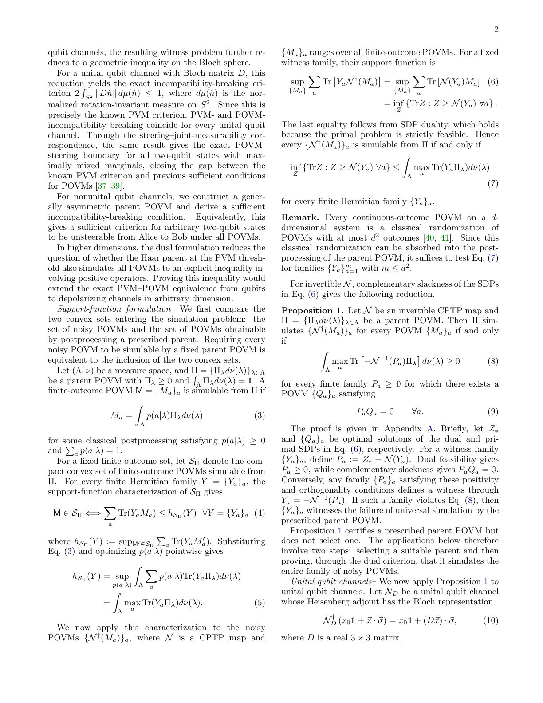
<figcaption class="paper-figure-caption"><b>Fig 1.</b> Low-resolution page preview, page 2</figcaption>
</figure>
<figure class="paper-figure-card">
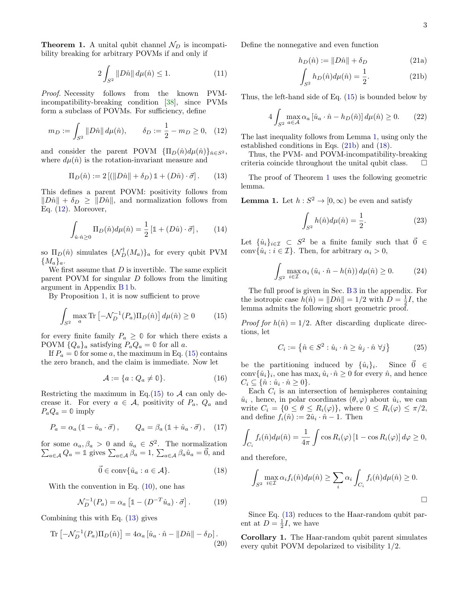
<figcaption class="paper-figure-caption"><b>Fig 2.</b> Low-resolution page preview, page 3</figcaption>
</figure>
<figure class="paper-figure-card">
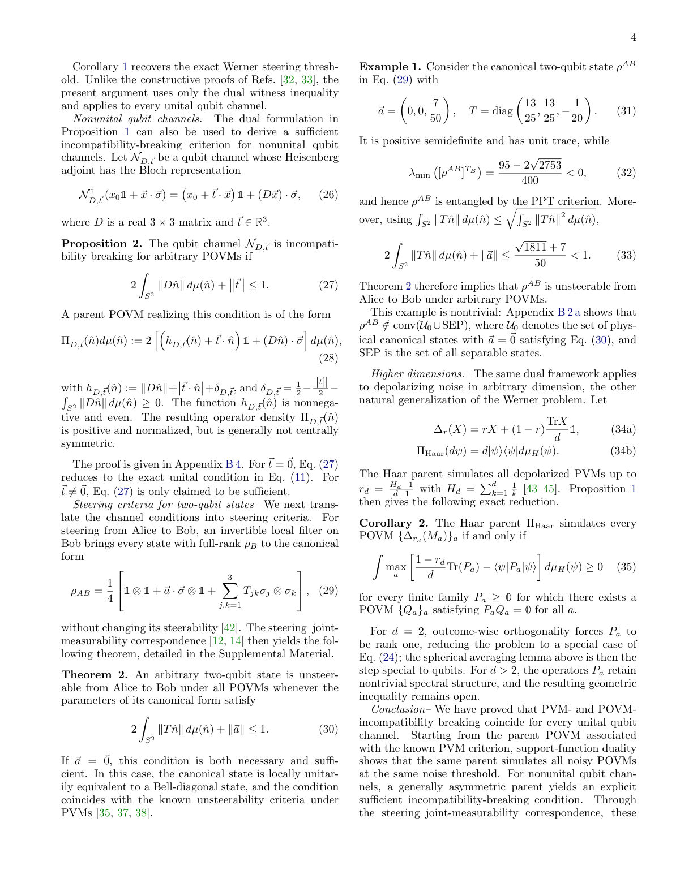
<figcaption class="paper-figure-caption"><b>Fig 3.</b> Low-resolution page preview, page 4</figcaption>
</figure>
<figure class="paper-figure-card">
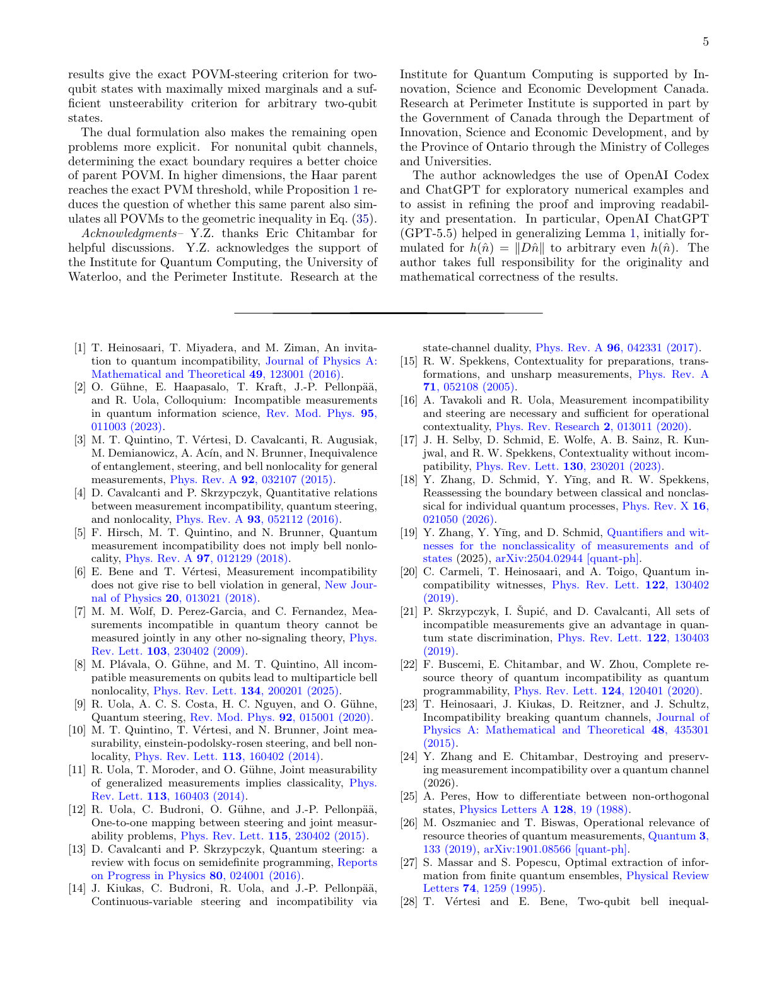
<figcaption class="paper-figure-caption"><b>Fig 4.</b> Low-resolution page preview, page 5</figcaption>
</figure>
<figure class="paper-figure-card">
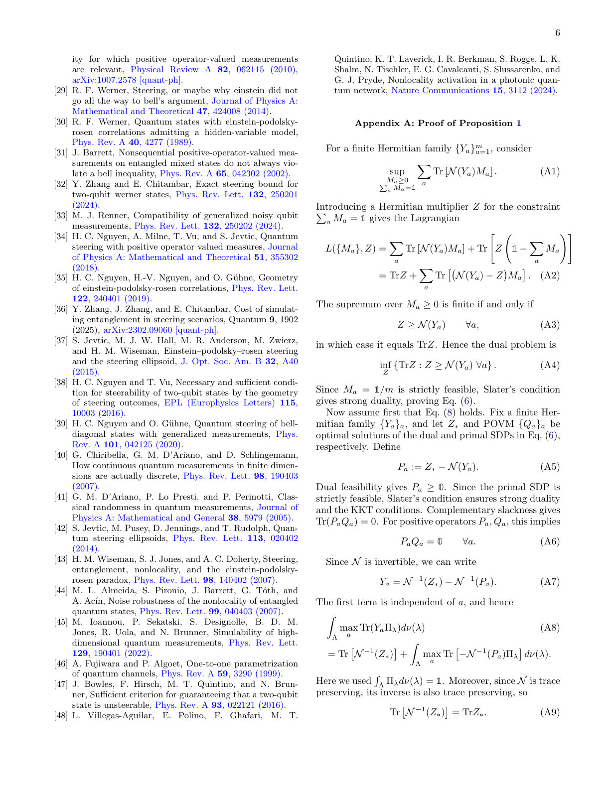
<figcaption class="paper-figure-caption"><b>Fig 5.</b> Low-resolution page preview, page 6</figcaption>
</figure>
</div>

<p><strong>Summary.</strong> This paper establishes exact criteria for when noisy qubit channels preserve the ability to perform all possible measurements (POVMs). By linking this concept to state steering and joint measurability, the authors provide rigorous bounds on channel noise and characterize unsteerable two-qubit states. It is a highly theoretical contribution advancing the understanding of quantum resource limitations.</p>
<p><strong>Why it may be interesting.</strong> This work provides fundamental, rigorous mathematical tools to quantify how much noise a quantum channel can tolerate before it fundamentally alters the set of measurable physical operations, which is crucial for understanding decoherence in quantum computation.</p>
<details>
<summary>Detailed structure</summary>
<p><strong>Main problem.</strong> The central problem is deriving the exact criterion determining when a noisy quantum channel renders all Positive-Operator-Valued Measures (POVMs) jointly measurable, which relates to incompatibility breaking.</p>
<p><strong>Main result.</strong> For unital qubit channels, the paper proves that POVM-incompatibility breaking coincides exactly with PVM-incompatibility breaking. It also provides sufficient criteria for nonunital channels and unsteerability of two-qubit states.</p>
<p><strong>Method.</strong> The authors employ a dual framework using support functions, relating joint measurability to steering problems via the steering–joint-measurability correspondence. They use SDP techniques and geometric arguments (like Lemma 1) to establish necessary and sufficient conditions.</p>
<p><strong>Model / system.</strong> The study focuses on qubit channels ($N$), modeled by CPTP maps, and their effect on joint measurability of POVMs ($\{M_a\}$). The results are extended to characterize unsteerability for two-qubit states ($
ho_{AB}$).</p>
<p><strong>Key observables.</strong> The diagnostic parameters include the integral $\int_{S^2} \|D\hat{n}\| d\mu(\hat{n})$ for unital channels, and the expectation value of a Hermitian witness $ ext{Tr}(H
ho)$ for state separability/unsteerability.</p>
<p><strong>Important parameters / regimes.</strong> The analysis depends on whether the channel is unital or nonunital, characterized by parameters like $D$ (noise matrix) and $\vec{t}$ (nonunitality vector).</p>
<p><strong>Assumptions / limitations.</strong> Key assumptions include relying on strong duality in SDP (Slater's condition) and establishing correspondences between different types of quantum resource limitations (e.g., steering $\leftrightarrow$ joint measurability).</p>
<p><strong>Figures summary.</strong> Not specified, but the notes detail mathematical derivations involving geometric inequalities and explicit construction of parent POVMs ($\Pi_{D,\vec{t}}$).</p>
<p><strong>Paper structure.</strong> The paper progresses from defining general compatibility criteria using SDP (Appendix A), establishing a correspondence between joint measurability and steering (Section B.2), deriving the exact criterion for unital channels (Theorem 1), and finally providing sufficient conditions for nonunital channels and unsteerability of two-qubit states (Theorem 2).</p>
</details>
<details>
<summary>Abstract</summary>
<p>We study when a noisy qubit channel renders all positive-operator-valued measures (POVMs) jointly measurable. For every unital qubit channel, we derive the exact incompatibility-breaking criterion and prove that projective measurements already determine the boundary for arbitrary POVMs. Through the steering--joint-measurability correspondence, this result gives the exact POVM-steering boundary for all two-qubit states with maximally mixed marginals, with the Werner states recovered as a special case. For nonunital qubit channels, we construct a generally asymmetric parent POVM and obtain an explicit sufficient incompatibility-breaking condition, which in turn yields a sufficient unsteerability criterion for arbitrary two-qubit states.</p>
</details>
<p><sub><a href="#top">↑ back to top</a></sub></p>

<p><a id="paper-2607.28335"></a></p>
<h3 id="fflo-transition-and-quantum-criticality-in-polarized-fermi-gases"><a href="http://arxiv.org/abs/2607.28335v1">FFLO transition and quantum criticality in polarized Fermi gases</a></h3>
<p><strong>Authors:</strong> Francesco Pirolo, Leonardo Pisani, Pierbiagio Pieri<br>
<strong>Type:</strong> theory · <strong>Category:</strong> quantum gases · <strong>PDF:</strong> <a href="https://arxiv.org/pdf/2607.28335v1">https://arxiv.org/pdf/2607.28335v1</a><br>
<strong>Analysis basis:</strong> full PDF text, analyzed in chunks
<strong>Topic relevance:</strong> 🔥 <code>analog quantum simulation</code> <strong>4/5</strong> · <code>Keldysh / 2PI / non-Gaussian methods</code> <strong>3/5</strong> · <code>non-equilibrium dynamics</code> <strong>2/5</strong> · <code>driven-dissipative phase transition</code> <strong>1/5</strong> · <code>methods for driven-dissipative</code> <strong>1/5</strong> · <code>non-equilibrium universality</code> <strong>1/5</strong></p>
<div class="figure-strip-hint">↔ Scroll figures horizontally</div>
<div class="paper-figures-scroll">
<figure class="paper-figure-card">
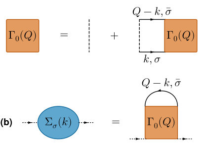
<figcaption class="paper-figure-caption"><b>Fig 1.</b> FIG. 1. Feynman diagrams for (a) the particle-particle prop- agator Γ0(Q) and (b) self-energy Σσ(k), with the notation k = (k, iω), Q = (Q, iΩ), σ =↓, ↑, ¯σ =↑, ↓. Dashed lines: bare contact interaction v0. Full lines with arrow: bare Green’s functions G0σ(k).</figcaption>
</figure>
<figure class="paper-figure-card">
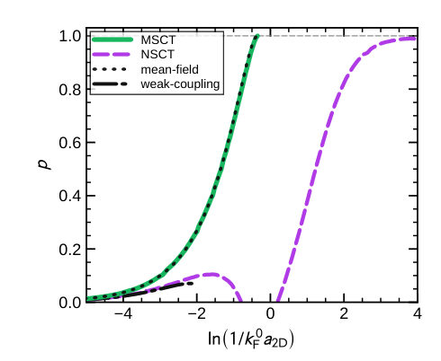
<figcaption class="paper-figure-caption"><b>Fig 2.</b> FIG. 2. 2D phase diagram showing the critical polarization p = pc versus coupling ln  1/k0 Fa2D  within the NSCT (dashed line) and MSCT (solid line) approaches. Dotted line: mean- field critical polarization. Dash-dotted line: weak-coupling expression (30).</figcaption>
</figure>
<figure class="paper-figure-card">
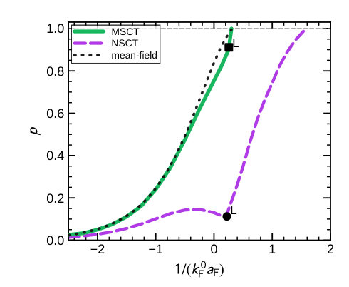
<figcaption class="paper-figure-caption"><b>Fig 3.</b> FIG. 3. 3D phase diagram showing the critical polarization p = pc versus coupling (kFaF)−1 within the NSCT (dashed line) and MSCT (solid line) approaches. Dotted line: mean- field critical polarization. The position of the Lifhsitz points L within the two approaches is also indicated.</figcaption>
</figure>
<figure class="paper-figure-card">
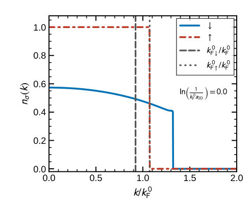
<figcaption class="paper-figure-caption"><b>Fig 4.</b> FIG. 4. Momentum distribution function nσ(k) within the NSCT approximation for ln  1/k0 Fa2D  = 0 and polarization p = 0.15. The vertical lines represent the non-interacting Fermi momenta k0 F↓(dashed line) and k0 F↑(dotted line). The interacting Fermi momenta kF↓and kF↑can be read by the positions of the discontinuity in the respective distributions.</figcaption>
</figure>
<figure class="paper-figure-card">
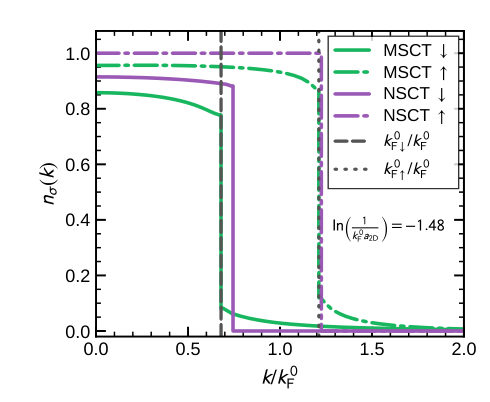
<figcaption class="paper-figure-caption"><b>Fig 5.</b> FIG. 5. Momentum distribution function nσ(k) within the MSCT (green) and NSCT (magenta) approaches for the ma- jority (dot-dashed lines) and minority (solid lines) species at ln  1/k0 Fa2D  = −1.48 (corresponding to ε0/E0 F = 0.105) and p = 0.5.</figcaption>
</figure>
</div>

<p><strong>Summary.</strong> The authors theoretically study the FFLO transition in polarized Fermi gases using an improved t-matrix formalism. They correct unphysical results from simpler theories by enforcing self-consistency, leading to a physically sound phase diagram. The work characterizes the critical behavior across dimensions, establishing mean-field universality for the 3D case.</p>
<p><strong>Why it may be interesting.</strong> This work directly addresses quantum criticality and pairing instabilities in ultracold atomic gases (polarized Fermi gases), which is a major research area within AMO physics and quantum gases theory.</p>
<details>
<summary>Detailed structure</summary>
<p><strong>Main problem.</strong> The paper investigates the zero-temperature transition from a polarized normal phase to the Fulde-Ferrell-Larkin-Ovchinnikov (FFLO) state in a two-dimensional Fermi gas.</p>
<p><strong>Main result.</strong> A minimally self-consistent theoretical extension restores physical consistency by satisfying the Luttinger theorem, and it places the 3D FFLO transition into the mean-field universality class.</p>
<p><strong>Method.</strong> The study employs a diagrammatic t-matrix approach, comparing non-self-consistent results with a minimal self-consistent correction (MSCT).</p>
<p><strong>Model / system.</strong> The system is a polarized Fermi gas, modeled as spin-1/2 fermions in two or three dimensions interacting via an attractive contact interaction. The analysis focuses on the FFLO pairing instability.</p>
<p><strong>Key observables.</strong> Quasiparticle decay rates, quasiparticle weights, momentum distributions, and critical dynamics of fermionic and bosonic degrees of freedom.</p>
<p><strong>Important parameters / regimes.</strong> Polarization parameter ($p$), coupling strength (ranging from weak to strong), and dimensionality (2D vs 3D).</p>
<p><strong>Assumptions / limitations.</strong> The MSCT approach is used as a necessary refinement over the standard non-self-consistent theory due to Luttinger theorem violations.</p>
<p><strong>Figures summary.</strong> Not specified, but the paper analyzes phase diagrams (critical polarization vs. coupling) and spectral function behavior.</p>
<p><strong>Paper structure.</strong> The structure details the formalism using the t-matrix approach, presents 2D phase diagrams versus 3D counterparts, studies non-Fermi liquid signatures, and finally analyzes critical exponents including vertex corrections in 3D.</p>
</details>
<details>
<summary>Abstract</summary>
<p>We investigate the zero-temperature transition from the polarized normal phase to the FFLO state in a two-dimensional Fermi gas by means of a diagrammatic t-matrix approach. We first show that the standard non-self-consistent theory produces an unphysical phase diagram because of a severe violation of the Luttinger theorem. Motivated by this observation, we introduce a minimal self- consistent extension that largely restores compliance with the Luttinger theorem while preserving the analytical simplicity of the original formalism. This leads to a physically consistent phase diagram over the whole interaction range. Building on this improved description, we characterize the quantum critical behavior of the FFLO transition through the quasiparticle decay rates, quasiparticle weights, momentum distributions, and the critical dynamics of both fermionic and bosonic degrees of freedom. We further compare the two- and three-dimensional systems, showing that their critical properties can be understood within a unified geometrical picture based on the nesting of the majority and minority Fermi surfaces. Finally, for the three-dimensional case, we demonstrate within the Hertz-Millis framework that vertex corrections are irrelevant, thereby placing the FFLO quantum phase transition in the mean-field universality class, in close analogy with itinerant antiferromagnets.</p>
</details>
<p><sub><a href="#top">↑ back to top</a></sub></p>

<p><a id="paper-2607.28479"></a></p>
<h3 id="mitigating-quantum-decoherence-via-global-optimal-control"><a href="http://arxiv.org/abs/2607.28479v1">Mitigating quantum decoherence via global optimal control</a></h3>
<p><strong>Authors:</strong> Ashkan Abedi, Roberto Menta, Julien Despres, Marco Polini, Francesco Caravelli, Vittorio Giovannetti<br>
<strong>Type:</strong> theory · <strong>Category:</strong> quantum information and computing · <strong>PDF:</strong> <a href="https://arxiv.org/pdf/2607.28479v1">https://arxiv.org/pdf/2607.28479v1</a><br>
<strong>Analysis basis:</strong> full PDF text, analyzed in chunks
<strong>Topic relevance:</strong> 🔥 <code>methods for driven-dissipative</code> <strong>4/5</strong> · <code>QC/QI experiment</code> <strong>2/5</strong> · <code>non-equilibrium dynamics</code> <strong>2/5</strong> · <code>Keldysh / 2PI / non-Gaussian methods</code> <strong>1/5</strong> · <code>correlated / nonlocal dissipation</code> <strong>1/5</strong> · <code>driven-dissipative phase transition</code> <strong>1/5</strong> · <code>entanglement &amp; information structure</code> <strong>1/5</strong></p>
<div class="figure-strip-hint">↔ Scroll figures horizontally</div>
<div class="paper-figures-scroll">
<figure class="paper-figure-card">
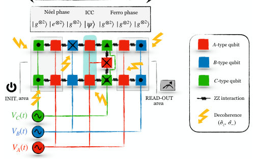
<figcaption class="paper-figure-caption"><b>Fig 1.</b> FIG. 1. Sketch of the globally-driven quantum computing ladder architecture encoding N = 2 computational qubits. The three types of qubits A, B, and C, represented as red, blue, and green squares respectively, are driven by their corresponding global control classi- cal source VA,B,C(t). Qubits are coupled via nearest-neighbor ZZ interactions (black springs). Crossed squares indicate qubits with doubled Rabi frequency. Black triangles and circles denote qubits with a non-standard local energy. The light-blue-highlighted column is the information carrier column (ICC), located at the interface be- tween the N´eel and polarized (ferromagnetic) phases. The first two columns constitute the...</figcaption>
</figure>
<figure class="paper-figure-card">
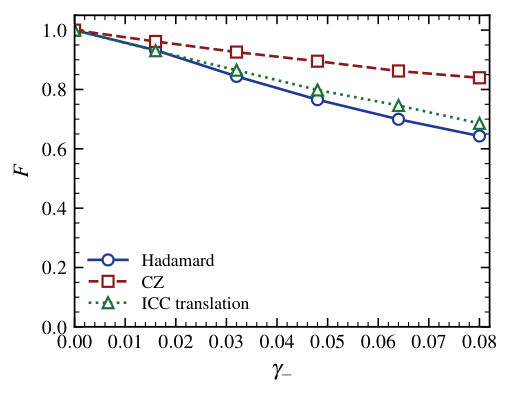
<figcaption class="paper-figure-caption"><b>Fig 2.</b> FIG. 2. Fidelity F of Eq. (9) for the three quantum operations consid- ered in this work as a function of the relaxation rate γ−with γz = 0, for N = 2 logical qubits. Open circles (solid line) correspond to the Hadamard gate, open squares (dashed line) to the CZ gate, and open triangles (dotted line) to the ICC single-shift operation. The rate γ− is expressed in µs−1, with Ωχ = 10 µs−1.</figcaption>
</figure>
<figure class="paper-figure-card">
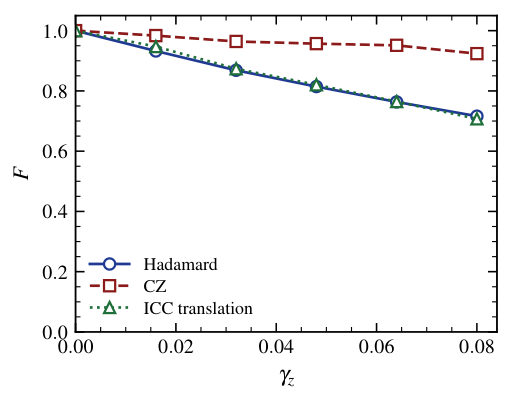
<figcaption class="paper-figure-caption"><b>Fig 3.</b> FIG. 3. Fidelity F of the same three quantum operations as in Fig. 2, now as a function of the dephasing rate γz with γ−= 0, for N = 2 logical qubits.</figcaption>
</figure>
<figure class="paper-figure-card">
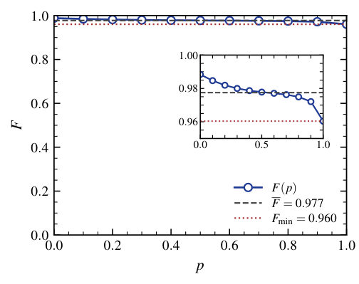
<figcaption class="paper-figure-caption"><b>Fig 4.</b> FIG. 4. Fidelity F of the GRAPE-optimized Hadamard gate in the dissipation-free limit γ−= γz = 0, as a function of the initial state parameter p of the target computational qubit with ϕ = 0 for N = 2 logical qubits. The optimized pulse has duration Topt ≈320 ns and the ladder is simulated with 2% relative disorder on the local qubit frequencies. The solid curve shows F(p), while the dashed and dotted lines mark the average F ≈0.977 and the minimum Fmin ≈ 0.960 over the full range of p (the overbar here denotes the average over p, not the trajectory average of Eq. (11)). The inset zooms into the narrow fidelity window, where the slow decline toward p = 1 becomes visible. The fidelity remains...</figcaption>
</figure>
<figure class="paper-figure-card">

<figcaption class="paper-figure-caption"><b>Fig 5.</b> FIG. 5. GRAPE-optimized control pulses implementing the Hadamard gate on the target computational qubit for N = 2 logi- cal qubits. The top panels display the in-phase (ΩX A ) and quadrature (ΩY A) components of the drive applied to the A-type qubits, while the bottom panels show the corresponding components (ΩX B , ΩY B) for the B-type qubits. The control amplitudes are normalized to the Rabi frequency Ωχ and bounded within [−1, 1], with a time discretization on the order of nanoseconds, compatible with state-of-the-art exper- imental hardware. The total gate duration is Topt ≈320 ns. Drives on the C-type qubits are not shown as they remain inactive for this single-qubit gate operation.</figcaption>
</figure>
</div>

<p><strong>Summary.</strong> The paper investigates how to protect quantum information in large-scale superconducting quantum processors suffering from environmental noise. By applying global optimal control techniques, the authors show that precisely shaping the external driving fields can suppress decoherence effects significantly. This method is crucial because it overcomes dissipation acting across the entire coupled system, not just isolated logical components.</p>
<p><strong>Why it may be interesting.</strong> This work directly addresses hardware limitations in superconducting quantum computing by providing a concrete, physically implementable method (global pulse shaping) to combat decoherence across an entire coupled chip architecture.</p>
<details>
<summary>Detailed structure</summary>
<p><strong>Main problem.</strong> The primary goal is mitigating quantum decoherence effects within globally driven superconducting quantum computing architectures.</p>
<p><strong>Main result.</strong> Global optimal control can drastically suppress decoherence by temporally shaping the global drive, restoring high gate fidelities even when dissipation acts on all physical qubits.</p>
<p><strong>Method.</strong> The analysis employs tensor-network-based techniques combined with solving the Lindblad Master Equation (LME) in the rotating frame to simulate dissipative dynamics.</p>
<p><strong>Model / system.</strong> The system is a superconducting qubit array modeled as a quasi-two-dimensional ladder geometry, featuring nearest-neighbor ZZ couplings and global driving fields. The dynamics are governed by an effective Hamiltonian derived from the full time-dependent Hamiltonian.</p>
<p><strong>Key observables.</strong> Gate fidelities (1QG, 2QG), quantum information flow degradation, relaxation rate ($\gamma^-$), and dephasing rate ($\gamma_z$).</p>
<p><strong>Important parameters / regimes.</strong> The dimensionless interaction parameter $\eta = \zeta/\Omega_\chi$, and the decoherence rates $\gamma^-$ and $\gamma_z$.</p>
<p><strong>Assumptions / limitations.</strong> Approximations include applying the Rotating-Wave Approximation (RWA) and using a phenomenological Lindblad form for dissipation, assuming zero temperature.</p>
<p><strong>Figures summary.</strong> Figures illustrate how gate fidelity decays as a function of relaxation ($\gamma^-$) or dephasing ($\gamma_z$) rates for various operations on the ladder architecture.</p>
<p><strong>Paper structure.</strong> The paper first establishes the physical model and Hamiltonian, then analyzes decoherence effects using tensor networks to quantify information loss. Finally, it demonstrates that global optimal control over the drive sequence can counteract these losses by compressing gate times.</p>
</details>
<details>
<summary>Abstract</summary>
<p>We show that global optimal control can drastically suppress the impact of decoherence in globally driven superconducting quantum computing architectures, taking as a prototype a recently proposed quasi-two-dimensional ladder geometry. Using a tensor-network-based approach, we quantify how amplitude-damping and dephasing channels degrade the flow of quantum information along the ladder and the fidelity of one- and two-qubit gate operations. We then demonstrate that shaping the global drive compresses the gate sequences by an order of magnitude in time, restoring high gate fidelities. We stress that this mitigation is far from trivial: in a globally driven processor, dissipation acts on every physical qubit---including those outside the logical register that sustain the surrounding ordered phases---so its impact cannot be suppressed by protecting an isolated subsystem, and is instead overcome purely through the temporal shaping of the global drive.</p>
</details>
<p><sub><a href="#top">↑ back to top</a></sub></p>

<p><a id="paper-2607.28499"></a></p>
<h3 id="structure-preserving-quantum-simulation-of-wave-equations-on-a-trapped-ion-processor"><a href="http://arxiv.org/abs/2607.28499v1">Structure-Preserving Quantum Simulation of Wave Equations on a Trapped-Ion Processor</a></h3>
<p><strong>Authors:</strong> Abhishek Shringi, Hsuan-Cheng Wu, Ahmed Shokry, Xiantao Li, Mahmut Taylan Kandemir<br>
<strong>Type:</strong> experiment · <strong>Category:</strong> other · <strong>PDF:</strong> <a href="https://arxiv.org/pdf/2607.28499v1">https://arxiv.org/pdf/2607.28499v1</a><br>
<strong>Analysis basis:</strong> full PDF text, analyzed in chunks
<strong>Topic relevance:</strong> 🔥 <code>QC/QI experiment</code> <strong>4/5</strong> · 🔥 <code>analog quantum simulation</code> <strong>4/5</strong> · <code>non-equilibrium dynamics</code> <strong>2/5</strong> · <code>methods for driven-dissipative</code> <strong>1/5</strong></p>
<div class="figure-strip-hint">↔ Scroll figures horizontally</div>
<div class="paper-figures-scroll">
<figure class="paper-figure-card">

<figcaption class="paper-figure-caption"><b>Fig 1.</b> FIG. 1. Circuit resources for the one-dimensional cosine pressure initial state with k0 = 1. Solid curves show the logical circuit before hardware-native compilation; markers show the circuit compiled for the Quantinuum H2-2 native gate set using H2-2E, with dashed curves denoting least-squares fits. Blue denotes total gate count or depth, and orange denotes the corresponding two-qubit contribution. (a),(c) Gate count and circuit depth, respectively, as functions of t ∈[0, 1] at fixed nh = 10. (b),(d) Gate count and circuit depth as functions of the number nh of grid qubits at fixed t = 0.1.</figcaption>
</figure>
<figure class="paper-figure-card">

<figcaption class="paper-figure-caption"><b>Fig 2.</b> FIG. 2. Circuit resources for the one-dimensional Gaussian pressure initial state with σ = 0.2 and five retained Fourier modes. Solid curves show the logical circuit before hardware-native compilation; markers show the circuit compiled for the Quantinuum H2-2 native gate set using H2-2E, with dashed curves denoting least-squares fits. Blue denotes total gate count or depth, and orange denotes the corresponding two-qubit contribution. (a),(c) Gate count and circuit depth, respectively, as functions of t ∈[0, 1] at fixed nh = 10. (b),(d) Gate count and circuit depth as functions of nh at fixed t = 0.1.</figcaption>
</figure>
<figure class="paper-figure-card">

<figcaption class="paper-figure-caption"><b>Fig 3.</b> FIG. 3. Half-domain kinetic energy for the one-dimensional cosine pressure initial state with k0 = 1 on a grid of Nh = 1024 points (nh = 10 grid qubits and 11 qubits in total). (a) The classical reference trajectory is compared with noiseless finite-shot AerSimulator results, the H2-2E noise-modeled emulator, and measurements from the Quantin- uum H2-2 processor. (b) Absolute error |⟨KE⟩method −⟨KE⟩classical| at each sampled time. A dash denotes a time not sampled on the corresponding backend. The mean absolute errors are 3.7 × 10−3, 1.2 × 10−2, and 1.1 × 10−2 for AerSimulator, H2-2E, and H2-2, respectively.</figcaption>
</figure>
<figure class="paper-figure-card">

<figcaption class="paper-figure-caption"><b>Fig 4.</b> FIG. 4. Half-domain kinetic energy for the one-dimensional Gaussian pressure initial state with σ = 0.2 on a grid of Nh = 1024 points (nh = 10 grid qubits and 11 qubits in total). (a) Classical reference, noiseless finite-shot AerSimulator, H2-2E noise-modeled emulator, and Quantinuum H2-2 results. (b) Absolute error relative to the classical reference at each sampled time. The mean absolute errors are 2.3 × 10−3, 9.3 × 10−3, and 5.9 × 10−3 for AerSimulator, H2-2E, and H2-2, respectively.</figcaption>
</figure>
<figure class="paper-figure-card">

<figcaption class="paper-figure-caption"><b>Fig 5.</b> FIG. 5. Circuit resources for the two-dimensional separable cosine pressure initial state with kx = ky = 1. Solid curves show the logical circuit before hardware-native compilation; markers show the circuit compiled for the Quantinuum H2-2 native gate set using H2-2E, with dashed curves denoting least-squares fits. Blue denotes total gate count or depth, and orange denotes the corresponding two-qubit contribution. (a),(c) Gate count and circuit depth, respec- tively, as functions of t ∈[0, 1] at fixed nh = 5 grid qubits per spatial direction. (b),(d) Gate count and circuit depth as functions of the per-direction register size nh at fixed t = 0.1.</figcaption>
</figure>
</div>

<p><strong>Summary.</strong> The paper presents the development and benchmarking of structure-preserving quantum circuits designed to simulate wave equations like the acoustic and Dirac equations. Using the Quantinuum H2-2 trapped-ion processor, they successfully measured observable dynamics on grids up to $32 	imes 32$, showing that accurate simulation is feasible for complex physical systems with thousands of degrees of freedom.</p>
<p><strong>Why it may be interesting.</strong> This work directly applies advanced quantum simulation techniques to fundamental PDEs (wave dynamics) using a state-of-the-art trapped-ion platform, providing concrete hardware evidence for simulating continuous physical systems beyond simple qubit registers.</p>
<details>
<summary>Detailed structure</summary>
<p><strong>Main problem.</strong> The primary goal is developing a quantum simulation method for structure-preserving wave equations (PDEs) on near-term quantum hardware.</p>
<p><strong>Main result.</strong> The simulations successfully tracked classical kinetic-energy dynamics for acoustic and Dirac problems on the H2-2 processor with low mean absolute errors, demonstrating feasibility for structured wave problems.</p>
<p><strong>Method.</strong> The authors developed Fourier-based quantum circuits utilizing techniques like exact bright–dark decomposition (for 2D acoustics) and Strang splitting (for variable mass Dirac dynamics).</p>
<p><strong>Model / system.</strong> The work simulates the one-dimensional acoustic wave equation, two-dimensional acoustic equations, and the variable mass Dirac equation. The experiments were performed on the Quantinuum H2-2 trapped-ion processor.</p>
<p><strong>Key observables.</strong> Subdomain kinetic energies (for acoustics) and spinor-component populations (for Dirac dynamics).</p>
<p><strong>Important parameters / regimes.</strong> Tested up to 1D grids of 1024 points and $32 	imes 32$ 2D grids, corresponding to state-space dimensions up to 4096.</p>
<p><strong>Assumptions / limitations.</strong> The results are benchmarked on structured inputs and observable dynamics, not establishing a quantum advantage over classical solvers; the scope is limited to periodic boundary conditions.</p>
<p><strong>Figures summary.</strong> Figures detail the overall circuits for 1D and 2D acoustic evolution (using QFTs), gate-level decompositions of propagators, and specific state preparation circuits for initial conditions like cosine or Gaussian profiles.</p>
<p><strong>Paper structure.</strong> The paper details the formulation of wave equations into quantum Hamiltonians, presents the structure-preserving circuit design using Fourier methods, benchmarks these circuits on the H2-2 processor across different dimensions/equations, and analyzes resource scaling.</p>
</details>
<details>
<summary>Abstract</summary>
<p>Wave equations provide a natural testbed for near-term quantum simulation of partial differential equations, but hardware demonstrations have remained limited in spatial dimension, equation class, system size, and physically meaningful output. We develop and benchmark structure-preserving, Fourier-based quantum circuits for the one- and two dimensional acoustic wave equations and Dirac dynamics with variable mass on the Quantinuum H2-2 trapped-ion processor. The experiments include one-dimensional grids with up to \(1024\) points and \(32\times32\) two-dimensional grids, corresponding to an encoded state-space dimension of up to \(4096\). Rather than reconstructing the full fields, we estimate subdomain kinetic energies directly from measurement samples. Across all tested acoustic and Dirac dynamics problems, the H2-2 results track the classical kinetic-energy dynamics with mean absolute errors between \(5.9\times10^{-3}\) and \(2.4\times10^{-2}\). At fixed retained bandwidth, the compiled gate counts grow approximately quadratically with the number of grid qubits; the acoustic circuit sizes are essentially independent of evolution time, whereas the cost also grows with the number of product-formula steps. These results provide hardware-level evidence that accurate observable dynamics can remain resolvable for structured wave problems with thousands of encoded degrees of freedom on a present-day trapped-ion processor.</p>
</details>
<p><sub><a href="#top">↑ back to top</a></sub></p>

<p><a id="paper-2607.27862"></a></p>
<h3 id="high-field-eprendor-of-nbe-centers-for-defect-engineering-in-6h-sic"><a href="http://arxiv.org/abs/2607.27862v1">High-Field EPR/ENDOR of N/Be Centers for Defect Engineering in 6H-SiC</a></h3>
<p><strong>Authors:</strong> Yuliya Ermakova, Ekaterina Dmitrieva, Margarita Sadovnikova, Fadis Murzakhanov, George Mamin, Sergey Nagalyuk, Evgeny Mokhov, Marat Gafurov<br>
<strong>Type:</strong> experiment · <strong>Category:</strong> quantum information and computing · <strong>PDF:</strong> <a href="https://arxiv.org/pdf/2607.27862v1">https://arxiv.org/pdf/2607.27862v1</a><br>
<strong>Analysis basis:</strong> full PDF text, analyzed in chunks
<strong>Topic relevance:</strong> 🔥 <code>QC/QI experiment</code> <strong>4/5</strong> · <code>spintronics-quantum-optics interface</code> <strong>3/5</strong> · <code>Kondo &amp; dissipative impurity</code> <strong>1/5</strong> · <code>analog quantum simulation</code> <strong>1/5</strong> · <code>quantum measurements</code> <strong>1/5</strong></p>
<div class="figure-strip-hint">↔ Scroll figures horizontally</div>
<div class="paper-figures-scroll">
<figure class="paper-figure-card">

<figcaption class="paper-figure-caption"><b>Fig 1.</b> Figure 1. (a) Applications of 6H-SiC doped with beryllium and nitrogen. (b) Crystal structure of Be-</figcaption>
</figure>
<figure class="paper-figure-card">

<figcaption class="paper-figure-caption"><b>Fig 2.</b> Figure 2. (a) Photographs of the 6H-SiC sample. (b) Upper panel—W-band EPR setup used in the</figcaption>
</figure>
<figure class="paper-figure-card">

<figcaption class="paper-figure-caption"><b>Fig 3.</b> Figure 3. (a) Continuous-wave X-band EPR spectrum of beryllium centers at room temperature of</figcaption>
</figure>
<figure class="paper-figure-card">

<figcaption class="paper-figure-caption"><b>Fig 4.</b> Figure 4. (a) Pulsed W-band EPR spectra for beryllium and nitrogen spin centers in 6H-SiC as a</figcaption>
</figure>
<figure class="paper-figure-card">

<figcaption class="paper-figure-caption"><b>Fig 5.</b> Figure 5. (a) X-band ENDOR spectrum at 50 K for the 14N isotope. The dashed line shows the simu-</figcaption>
</figure>
</div>

<p><strong>Summary.</strong> The research uses high-field EPR/ENDOR spectroscopy to investigate nitrogen (N) donor and beryllium (Be) acceptor impurities co-doped into 6H-SiC. By measuring detailed spin interactions, the authors differentiate the electronic properties of these two types of defects. This work is vital for defect engineering, showing how N centers are suitable for quantum memory while Be centers provide sensitive local strain measurements.</p>
<p><strong>Why it may be interesting.</strong> This work directly addresses solid-state quantum hardware by characterizing spin defects in a wide-bandgap semiconductor. The detailed measurement of hyperfine and quadrupole interactions provides crucial input parameters for modeling defect qubits and understanding environmental decoherence mechanisms.</p>
<details>
<summary>Detailed structure</summary>
<p><strong>Main problem.</strong> To characterize co-doped impurities (Nitrogen donor and Beryllium acceptor) in 6H-SiC to understand defect engineering for quantum technologies.</p>
<p><strong>Main result.</strong> The study successfully differentiated the electronic and nuclear properties of N and Be centers, showing that N donors are stable for quantum memory while Be acceptors act as sensitive probes of local lattice strain via large quadrupole splittings.</p>
<p><strong>Method.</strong> High-field Electron Paramagnetic Resonance (EPR) and Electron–Nuclear Double Resonance (ENDOR) spectroscopy were employed to probe spin interactions at high spectral resolution.</p>
<p><strong>Model / system.</strong> The physical system is a 6H-SiC single crystal co-doped with N donors and Be acceptors. The analysis utilizes models incorporating hyperfine and quadrupole interactions, often described by an axial spin Hamiltonian for the electronic spin centers.</p>
<p><strong>Key observables.</strong> Hyperfine coupling constants (A), nuclear quadrupole splitting (Q), electron spin relaxation times ($T_1$, $T_2$), and spectral line patterns (quartets).</p>
<p><strong>Important parameters / regimes.</strong> Doping concentrations ($\sim 10^{18} 	ext{ cm}^{-3}$); W-band frequency ($94 	ext{ GHz}$); Temperature regimes (low temperature for high resolution).</p>
<p><strong>Assumptions / limitations.</strong> The analysis assumes that the observed spectral features can be mapped to specific defect sites and local environments, allowing for quantitative extraction of interaction parameters.</p>
<p><strong>Figures summary.</strong> Figures illustrate the crystal structure showing N and Be impurities in different lattice configurations, and show W-band ENDOR spectra demonstrating TRIPLE resonance effects.</p>
<p><strong>Paper structure.</strong> The paper progresses by first establishing the need to characterize co-doped defects; it then details the use of high-field EPR/ENDOR techniques to measure spectroscopic signatures (hyperfine structure, relaxation times) for both N and Be centers; finally, it compares these findings to elucidate distinct functional roles for each impurity type.</p>
</details>
<details>
<summary>Abstract</summary>
<p>Silicon carbide (SiC) in its various structural modifications is widely used in power semiconductor electronics, operating under extreme conditions of high temperature, high voltage, and intense radiation. The discovery of spin defects (S&gt;0) with unique optical and coherent properties has further positioned SiC as a promising platform for quantum technologies. Here, we investigate a 6H-SiC single crystal co-doped with nitrogen and beryllium at concentrations of 1018 cm-3, using continuous-wave and pulsed electron paramagnetic resonance (EPR) and electron-nuclear double resonance (ENDOR). To enhance spectral resolution, experiments were conducted in the W-band (94 GHz; B = 3.4 T). Pulsed EPR identified nitrogen donors and beryllium acceptors in various lattice positions, allowing for the determination of their phase coherence and spin-lattice relaxation times. ENDOR measurements elucidated the electron-nuclear interactions with the local silicon and carbon environment, including distant coordination spheres. The observed hyperfine structures indicated highly delocalized spin density within the supercell. The TRIPLE resonance spectra verify coupled nuclear spin subspaces from different coordination spheres due to defect spin density. These results demonstrate the feasibility of incorporating dual impurities with distinct functional roles while preserving the crystal lattice`s structural features.</p>
</details>
<p><sub><a href="#top">↑ back to top</a></sub></p>

<p><a id="paper-2607.28572"></a></p>
<h3 id="quantum-fidelity-per-cost-a-metric-for-evaluation-of-quantum-computing-systems"><a href="http://arxiv.org/abs/2607.28572v1">Quantum Fidelity-per-Cost: A Metric for Evaluation of Quantum Computing Systems</a></h3>
<p><strong>Authors:</strong> Siddarth Shinde, Jakub Szefer<br>
<strong>Type:</strong> experiment · <strong>Category:</strong> quantum information and computing · <strong>PDF:</strong> <a href="https://arxiv.org/pdf/2607.28572v1">https://arxiv.org/pdf/2607.28572v1</a><br>
<strong>Analysis basis:</strong> full PDF text, analyzed in chunks
<strong>Topic relevance:</strong> 🔥 <code>QC/QI experiment</code> <strong>4/5</strong> · <code>entanglement &amp; information structure</code> <strong>2/5</strong> · <code>quantum measurements</code> <strong>2/5</strong> · <code>methods for driven-dissipative</code> <strong>1/5</strong> · <code>non-equilibrium dynamics</code> <strong>1/5</strong></p>
<div class="figure-strip-hint">↔ Scroll figures horizontally</div>
<div class="paper-figures-scroll">
<figure class="paper-figure-card">

<figcaption class="paper-figure-caption"><b>Fig 1.</b> Fig. 1. Bell-state fidelity error. Mean TVD falls with shot count on every provider, but the ordering of devices is largely fixed by 100 shots; at 1000 shots the spread across access paths is a factor of five, from 0.025 (IBM Marrakesh) to 0.130 (IBM Torino, retired). Color encodes provider; IQM entries are annotated with the cloud they were reached through.</figcaption>
</figure>
<figure class="paper-figure-card">

<figcaption class="paper-figure-caption"><b>Fig 2.</b> Fig. 2. The 1000-shot ordering by fidelity (left) against the ordering by QFC (right). Every crossing line is an access path whose standing changes once price is accounted for. The two emphasized lines are the largest movers: trapped-ion IonQ Aria-1 has the best fidelity in the study but falls to 14th by value, while IQM Sirius rises from 9th to 1st.</figcaption>
</figure>
<figure class="paper-figure-card">

<figcaption class="paper-figure-caption"><b>Fig 3.</b> Fig. 3. QFC vs. shot count on log–log axes (α = β = γ = 1). Thin lines are individual access paths, colored by billing model; bold lines are the median of each group. The three models produce three distinct shapes: per-shot-only billing is flat in N, task-plus-shot billing rises and saturates, and runtime billing rises with unit slope because the billed duration barely depends on N.</figcaption>
</figure>
</div>

<p><strong>Summary.</strong> This paper introduces Quantum Fidelity-per-Cost (QFC), a novel metric designed to compare cloud quantum computers by integrating execution fidelity with the actual monetary cost. Through extensive cross-provider measurements, the authors demonstrate that considering price leads to different hardware rankings than focusing solely on physical performance metrics like fidelity. This provides a necessary framework for practical, real-world adoption of quantum computing resources.</p>
<p><strong>Why it may be interesting.</strong> While focused on cloud infrastructure, the development of rigorous, quantifiable metrics for performance evaluation (like QFC) is crucial for any field relying on complex quantum hardware access, including those simulating open quantum systems or requiring resource estimation.</p>
<details>
<summary>Detailed structure</summary>
<p><strong>Main problem.</strong> The authors address the difficulty of comparing quantum computing hardware accessed via cloud services due to heterogeneous and complex billing models.</p>
<p><strong>Main result.</strong> A cost-aware metric, Quantum Fidelity-per-Cost (QFC), was proposed, showing that ranking based on price can significantly differ from rankings based purely on fidelity.</p>
<p><strong>Method.</strong> The study involves a cross-provider measurement of quantum circuit execution fidelity across multiple cloud QPUs and combines this with monetary cost into the QFC score.</p>
<p><strong>Model / system.</strong> The platform consists of superconducting qubits accessed through four major cloud providers (AWS, IBM Quantum, IQM Resonance, OQC), tested using a narrow two-qubit Bell-state workload.</p>
<p><strong>Key observables.</strong> Quantum Fidelity (measured via KL divergence and TVD), monetary cost ($C$), and the derived QFC score.</p>
<p><strong>Important parameters / regimes.</strong> Shot count ($N$), billing model parameters ($c_{	ext{task}}, c_{	ext{shot}}, c_{	ext{sec}}$), and sensitivity weighting factors ($\alpha, eta, \gamma$).</p>
<p><strong>Assumptions / limitations.</strong> The metric is workload-specific (Bell state) and dependent on a snapshot of provider pricing; the comparison assumes defined billing models apply consistently.</p>
<p><strong>Figures summary.</strong> Figures compare mean TVD vs. shots, show QFC vs. shot count for different billing models, and illustrate that fidelity-based ordering differs from QFC ordering.</p>
<p><strong>Paper structure.</strong> The paper introduces the problem of cost-aware benchmarking, details the cross-provider measurement study using a specific workload, proposes and analyzes the QFC metric, presents empirical results comparing fidelity vs. cost rankings, and discusses stability analysis.</p>
</details>
<details>
<summary>Abstract</summary>
<p>Cloud-accessible quantum computing has made hardware comparison not only a physics benchmark but also a practical purchasing decision. Cost-aware comparison of quantum computers remains underexplored and is difficult to do under the heterogeneous billing models offered by various cloud-based quantum computing providers. This paper makes two main contributions to enable price-aware comparison of quantum computers. First, this work presents a cross-provider measurement study of quantum circuit execution fidelity spanning 14 cloud QPU access-path entries (12 distinct physical QPUs) across four cloud access paths: Amazon Web Services (AWS) cloud, IBM Quantum Runtime (IBM) cloud, IQM Resonance (IQM) cloud, and Oxford Quantum Circuits (OQC) cloud. Second, this work proposes and analyzes a cost-aware score, Quantum Fidelity-per-Cost (QFC), which combines Kullback--Leibler (KL) divergence from an ideal output distribution, shot count, and monetary cost into one possible metric under a documented billing model. The main empirical observation from this work is that cost-aware ranking can differ from purely fidelity-based evaluation of quantum computers, and that users may select different quantum computing backends when they consider price in their selection, as opposed to selection based on fidelity alone. This work shows that the ranking is stable under reweighting of the metric, and that a device's billing model, not its hardware, governs how its score scales with shot count. Reported QFC values change as new machines come online or as providers revise their prices.</p>
</details>
<p><sub><a href="#top">↑ back to top</a></sub></p>

<p><a id="paper-2607.28600"></a></p>
<h3 id="symft-universal-fault-tolerant-quantum-circuit-simulation-via-symbolic-clifford-pauli-frames-and-stabilizer-coordinates"><a href="http://arxiv.org/abs/2607.28600v1">SymFT: Universal Fault-Tolerant Quantum Circuit Simulation via Symbolic Clifford--Pauli Frames and Stabilizer Coordinates</a></h3>
<p><strong>Authors:</strong> Wang Fang, Huazhe Lou, Riling Li<br>
<strong>Type:</strong> theory · <strong>Category:</strong> quantum information and computing · <strong>PDF:</strong> <a href="https://arxiv.org/pdf/2607.28600v1">https://arxiv.org/pdf/2607.28600v1</a><br>
<strong>Analysis basis:</strong> full PDF text, analyzed in chunks
<strong>Topic relevance:</strong> 🔥 <code>quantum measurements</code> <strong>4/5</strong> · <code>measurement-induced transitions</code> <strong>3/5</strong> · <code>methods for driven-dissipative</code> <strong>3/5</strong></p>
<div class="figure-strip-hint">↔ Scroll figures horizontally</div>
<div class="paper-figures-scroll">
<figure class="paper-figure-card">

<figcaption class="paper-figure-caption"><b>Fig 1.</b> Low-resolution page preview, page 2</figcaption>
</figure>
<figure class="paper-figure-card">

<figcaption class="paper-figure-caption"><b>Fig 2.</b> Low-resolution page preview, page 3</figcaption>
</figure>
<figure class="paper-figure-card">

<figcaption class="paper-figure-caption"><b>Fig 3.</b> Low-resolution page preview, page 4</figcaption>
</figure>
<figure class="paper-figure-card">

<figcaption class="paper-figure-caption"><b>Fig 4.</b> Low-resolution page preview, page 5</figcaption>
</figure>
<figure class="paper-figure-card">

<figcaption class="paper-figure-caption"><b>Fig 5.</b> Low-resolution page preview, page 6</figcaption>
</figure>
</div>

<p><strong>Summary.</strong> This paper introduces SymFT, a novel high-throughput simulator designed for fault-tolerant quantum circuits involving noise and feedback. It achieves this by factorizing the circuit evolution symbolically and using adaptive planning to track state changes efficiently. The resulting simulator significantly outperforms existing tools on key benchmarks like surface code simulation.</p>
<p><strong>Why it may be interesting.</strong> The efficiency gains in simulating complex, noisy quantum error correction protocols are crucial for benchmarking hardware capabilities and understanding resource overheads in large-scale quantum computation.</p>
<details>
<summary>Detailed structure</summary>
<p><strong>Main problem.</strong> Developing a high-throughput simulator for fault-tolerant quantum circuits that are dominated by Clifford gates but require non-Clifford operations, noise modeling, and feedback.</p>
<p><strong>Main result.</strong> The proposed SymFT simulator achieves state-of-the-art sampling performance, demonstrating significant speedups (2.5x to 3.5x) over existing simulators for surface code and magic-state distillation circuits.</p>
<p><strong>Method.</strong> It employs symbolic Clifford–Pauli frame factorization to separate shot-independent evolution from measurement outcomes, combined with adaptive stabilizer-coordinate planning to efficiently track the active state vector.</p>
<p><strong>Model / system.</strong> The model is fault-tolerant quantum computation simulated using Pauli operators ($  ext{Pn}$ group), supporting Clifford gates, non-Clifford rotations, stochastic noise, and mid-circuit measurements/feedback.</p>
<p><strong>Key observables.</strong> Sampling throughput (speedup factor) compared against benchmarks like Stim, Clifft, and SOFT.</p>
<p><strong>Important parameters / regimes.</strong> Circuit depth, number of qubits ($n$), Pauli rotation angles ($ heta$).</p>
<p><strong>Assumptions / limitations.</strong> The circuit structure is assumed to be Clifford-dominated; the method avoids localization-induced Clifford transformations during sampling.</p>
<p><strong>Figures summary.</strong> Figure 1 illustrates the symbolic Clifford–Pauli frame factorization process, showing how operations are pulled back into residual frames and an ordered sequence for simulation.</p>
<p><strong>Paper structure.</strong> The paper introduces SymFT by first detailing its two core components: symbolic factorization (decomposing evolution $K_T$) and adaptive planning (using stabilizer-destabilizer tableaux). It then presents the results showing state-of-the-art performance across various fault-tolerance tasks.</p>
</details>
<details>
<summary>Abstract</summary>
<p>Fault-tolerant protocols often consist largely of stabilizer subcircuits, yet the non-Clifford operations required for universality make exact sampling costly. We present SymFT, a high-throughput simulator for Clifford-dominated circuits with Pauli rotations, stochastic Pauli noise, mid-circuit Pauli measurements, and measurement-record-controlled Pauli feedback. It combines two ideas. First, symbolic Clifford--Pauli frame factorization reduces branch-probability sampling to Pauli rotations and measurement projectors, with noise and feedback represented by symbolic signs. Since the residual Clifford and Pauli frames are unitary, they do not affect branch probabilities and need not be applied in every shot. Second, adaptive stabilizer-coordinate planning uses a shared stabilizer--destabilizer tableau to define the basis and stores only the active non-stabilizer degrees of freedom in a dynamically sized dense active-state vector. It resolves basis changes once and emits direct multi-coordinate sampling instructions, thereby avoiding per-shot tableau updates and localization-induced Clifford transformations of the dense vector. Across the tested pure-Clifford and near-Clifford circuits, SymFT achieves state-of-the-art sampling performance. On a single CPU core, it is $2.51\text{--}2.56\times$ faster than Stim for surface-code circuits and $1.86\text{--}3.51\times$ faster than Clifft for magic-state cultivation and distillation circuits. For the tested cultivation circuits, its sampling throughput also exceeds that of our previous simulator, SOFT, by more than two orders of magnitude.</p>
</details>
<p><sub><a href="#top">↑ back to top</a></sub></p>

<p><a id="paper-2607.27906"></a></p>
<h3 id="interconnection-of-quantum-networks-at-urban-scale-analysis-of-temporal-stability-of-entangled-photon-sources"><a href="http://arxiv.org/abs/2607.27906v1">Interconnection of Quantum Networks at Urban scale: Analysis of Temporal Stability of Entangled Photon Sources</a></h3>
<p><strong>Authors:</strong> Laura d'Avossa, Angela Sara Cacciapuoti, Marcello Caleffi<br>
<strong>Type:</strong> experiment · <strong>Category:</strong> quantum information and computing · <strong>PDF:</strong> <a href="https://arxiv.org/pdf/2607.27906v1">https://arxiv.org/pdf/2607.27906v1</a><br>
<strong>Analysis basis:</strong> full PDF text, analyzed in chunks
<strong>Topic relevance:</strong> 🔥 <code>quantum optics experiment</code> <strong>4/5</strong> · <code>QC/QI experiment</code> <strong>2/5</strong> · <code>entanglement &amp; information structure</code> <strong>1/5</strong> · <code>interference shaping light</code> <strong>1/5</strong> · <code>non-equilibrium dynamics</code> <strong>1/5</strong></p>
<div class="figure-strip-hint">↔ Scroll figures horizontally</div>
<div class="paper-figures-scroll">
<figure class="paper-figure-card">

<figcaption class="paper-figure-caption"><b>Fig 1.</b> Fig. 1: Schematic representation of interconnected quantum networks. Multiple independent quantum networks are synchronized via a common reference clock. A quantum repeater node performs entanglement swapping between networks, enabling the realization of a large-scale quantum communication architecture.</figcaption>
</figure>
<figure class="paper-figure-card">

<figcaption class="paper-figure-caption"><b>Fig 2.</b> Fig. 2: Experimental setup built in the National Quantum Internet.it testbed at the University of Naples Federico II. The setup consists of two polarization-entangled photon sources (EPS1 and EPS2), generating entangled pairs on DWDM channels 25-43. A shared electrical clock from EPS1 is used to synchronize EPS2. Photons from EPS1 are directly sent to the detection stage, while photons from EPS2 are distributed over multiple fiber links, including a short reference path (∼10 m), a 500 m spool, a 5 km spool, and a 7 km metropolitan loop, in order to investigate timing stability under different propagation conditions. Detection is performed using SNSPDs, and arrival times are recorded via a...</figcaption>
</figure>
<figure class="paper-figure-card">

<figcaption class="paper-figure-caption"><b>Fig 3.</b> Fig. 3: Correlation histograms between detection channels CH1 and CH2 for different clock synchronization conditions of the two entangled photon sources. When the sources operate with identical clock periods but no clock sharing, no temporal correlations are observed. When the clock signal is electrically shared between the sources (clock lock condition), a clear coincidence peak emerges, demonstrating successful synchronization. Finally, by applying a controlled phase shift to one of the clocks, the correlation peak is displaced by the desired temporal offset (6.9 ns), enabling fine adjustment of the relative timing between the two sources.</figcaption>
</figure>
<figure class="paper-figure-card">

<figcaption class="paper-figure-caption"><b>Fig 4.</b> Fig. 4: Schematic of the 7 km fiber loop connecting the Monte Sant’Angelo campus (MSA) and the Engineering faculty campus. The entangled photon pairs are generated and detected in the laboratory at MSA and injected into the network at the local Point of Presence (PoP). The remote site is located approximately 3.5 km away, and the loop-back configuration results in a total propagation length of about 7 km.</figcaption>
</figure>
<figure class="paper-figure-card">

<figcaption class="paper-figure-caption"><b>Fig 5.</b> Fig. 5: Measured noise count rate across DWDM channels of the deployed metropolitan loop. A background level of the order of 103 cps is observed, with pronounced peaks around channel 21 (associated with the University network traffic) and in the range 46–61, where excess counts up to three orders of magnitude above the background are detected.</figcaption>
</figure>
</div>

<p><strong>Summary.</strong> This paper experimentally analyzes the temporal synchronization stability required for connecting entangled photon sources across metropolitan fiber networks. By using time-tagged coincidence measurements over an 8-hour period, the authors confirm that reliable entanglement distribution is possible even with significant background noise and channel imperfections inherent to existing infrastructure. This validates a key step toward deploying scalable quantum internet services.</p>
<p><strong>Why it may be interesting.</strong> This work provides crucial empirical data on the practical feasibility of scaling quantum communication infrastructure by quantifying temporal stability limits in real-world, lossy urban environments.</p>
<details>
<summary>Detailed structure</summary>
<p><strong>Main problem.</strong> The study investigates the temporal stability required for interconnecting quantum networks at an urban scale, where precise time synchronization is critical for entanglement-based protocols.</p>
<p><strong>Main result.</strong> The experiment successfully demonstrated reliable synchronization between two entangled photon sources over a metropolitan fiber link, maintaining detectable correlations despite significant background noise and channel impairments.</p>
<p><strong>Method.</strong> Temporal correlation functions were analyzed using time-tagged coincidence measurements to track the long-term stability of clock synchronization across varying fiber lengths.</p>
<p><strong>Model / system.</strong> The platform involves two entangled photon sources operating in the telecommunication C-band, connected via existing metropolitan optical fiber infrastructure (e.g., 7 km loops).</p>
<p><strong>Key observables.</strong> Temporal correlation peaks, long-term clock drift ($\approx 120$ ps), and statistical dispersion quantified by the Interquartile Range (IQR).</p>
<p><strong>Important parameters / regimes.</strong> 8-hour acquisition period; C-band operation; metropolitan fiber losses and background noise ($\sim 10^3 	ext{ cps}$).</p>
<p><strong>Assumptions / limitations.</strong> Synchronization relies on sharing an explicit electrical clock signal, and the measurement is assumed to be detector-limited rather than dominated by physical broadening processes.</p>
<p><strong>Figures summary.</strong> Figures illustrate schematic setups (e.g., Figure 1, Figure 2), correlation histograms showing coincidence peaks upon clock synchronization (Figure 3), and temporal evolution plots tracking drift and dispersion over time (Figure 7).</p>
<p><strong>Paper structure.</strong> The paper progresses from establishing the necessity of time synchronization for quantum networks to detailing the experimental setup using metropolitan fiber links. It then presents measurements of background noise, followed by long-term stability analysis showing limited drift and robust correlation detection.</p>
</details>
<details>
<summary>Abstract</summary>
<p>Time synchronization is a fundamental requirement in entanglement-based quantum networks, where the indistinguishability of photons in the time domain is essential for enabling Hong-Ou-Mandel interference and entanglement swapping. In addition to precise temporal alignment, it is equally crucial to ensure the stability of the reference clock over time, as even small fluctuations can degrade the overall performance of the network. In this work, we investigate the stability of clock synchronization for entanglement distribution based on entangled-photon sources operating in the telecommunication C-band. Temporal correlations between photon detection events are analyzed using time-tagged coincidence measurements, enabling the extraction of synchronization peaks and their long-term stability. Experimental results demonstrate that, once locked, the sources exhibit stable temporal correlations over an 8-hour acquisition period, with a maximum observed drift of approximately 120 ps, primarily associated with long fiber links. The width of the correlation peak remains consistent with detector jitter, indicating negligible additional system-induced temporal broadening. A central result of this work is the experimental synchronization between two entanglement-photon sources in a realistic metropolitan deployment, where entanglement distribution is performed over existing telecommunication infrastructure characterized by non-negligible losses and background noise. In this scenario, despite the presence of significant imperfections introduced by the metropolitan-scale fiber network, the observed correlations remain clearly detectable and are consistently well-approximated by Gaussian statistics. This confirms that the two sources can be reliably synchronized not only in controlled laboratory conditions but also under real-world operating constraints.</p>
</details>
<p><sub><a href="#top">↑ back to top</a></sub></p>

<p><a id="paper-2607.27527"></a></p>
<h3 id="noise-resilient-and-scalable-quantum-error-correction-for-nuclear-spin-qubits-in-silicon-with-electron-shuttling"><a href="http://arxiv.org/abs/2607.27527v1">Noise-resilient and Scalable Quantum Error Correction for Nuclear Spin Qubits in Silicon with Electron Shuttling</a></h3>
<p><strong>Authors:</strong> Wayne M. Witzel, Matthew D. Grace, Dwight R. Luhman<br>
<strong>Type:</strong> both · <strong>Category:</strong> quantum information and computing · <strong>PDF:</strong> <a href="https://arxiv.org/pdf/2607.27527v1">https://arxiv.org/pdf/2607.27527v1</a><br>
<strong>Analysis basis:</strong> full PDF text, analyzed in chunks
<strong>Topic relevance:</strong> 🔥 <code>QC/QI experiment</code> <strong>4/5</strong> · <code>quantum measurements</code> <strong>2/5</strong> · <code>measurement-induced transitions</code> <strong>1/5</strong> · <code>spintronics-quantum-optics interface</code> <strong>1/5</strong></p>
<div class="figure-strip-hint">↔ Scroll figures horizontally</div>
<div class="paper-figures-scroll">
<figure class="paper-figure-card">

<figcaption class="paper-figure-caption"><b>Fig 1.</b> FIG. 1. Global NMR cycle for universal quantum compu- tation composed of NMR pulses (black boxes), EPI parity measurements (colored boxes), and selective Zπ operations (dashed boxes). a) highlights the basic, default cycle for syn- drome extraction; b) details the full cycle that enables uni- versality with an effective T (Hadamard) gate by applying Zπ on the left (right) portion of the cycle.</figcaption>
</figure>
<figure class="paper-figure-card">

<figcaption class="paper-figure-caption"><b>Fig 2.</b> FIG. 2. DEM for B0 = 1 mT, B1 ≈100 µT both with DD (a)-(e) and without it (f). With DD, frequencies, durations, and B1 were 15.93 (15.95) kHz, 313.6 (658.1) µs, and 99.9 (95.2) µT for Yπ/2 (Xπ). Without DD, B0 (B1) were 996 µT (99.5 µT) with 15.89 kHz frequency and 314.6 µs duration.</figcaption>
</figure>
<figure class="paper-figure-card">

<figcaption class="paper-figure-caption"><b>Fig 3.</b> FIG. 3. DEM for B0 = 1 mT, B1 ≈1 mT both with DD (a)-(e) and without it (f). With DD, frequencies, durations, and B1 were 16.02 (15.00) kHz, 31.20 (66.68) µs, and 99.9 (95.2) µT for Yπ/2 (Xπ). Without DD, B0 (B1) were 1.064 mT (984 µT) with 15.96 kHz frequency and 31.32 µs duration.</figcaption>
</figure>
</div>

<p><strong>Summary.</strong> This work presents a method to enable quantum computation using nuclear spin qubits in silicon by employing Electron Pair Interferometry (EPI) mediated by electron shuttling. This technique allows for robust measurement of nuclear spin parity, which is then integrated into a full error correction cycle using global NMR gates. The result is a scalable and noise-resilient protocol for universal quantum computation.</p>
<p><strong>Why it may be interesting.</strong> It provides a concrete, solid-state realization pathway for fault-tolerant quantum computing by engineering complex interactions (electron shuttling) to overcome intrinsic qubit limitations (long coherence times).</p>
<details>
<summary>Detailed structure</summary>
<p><strong>Main problem.</strong> The challenge of controlling and measuring nuclear spin qubits in silicon due to their long coherence times, which results in low sensitivity to external control signals.</p>
<p><strong>Main result.</strong> A complete gate set for universal quantum computation is achieved by combining Electron Pair Interferometry (EPI) with global NMR techniques, providing a noise-resilient framework tailored for CSS quantum error correction.</p>
<p><strong>Method.</strong> The core method involves using electron pair interferometry (EPI) to coherently transfer the parity of nuclear spins onto measurable electron states, which is then integrated into a full syndrome extraction cycle using global NMR gates.</p>
<p><strong>Model / system.</strong> The physical platform is an array of nuclear spin qubits embedded in silicon quantum dots. Control relies on shuttling pairs of electrons initialized in a singlet state to mediate parity measurements via hyperfine interactions.</p>
<p><strong>Key observables.</strong> Parity of the nuclear spins (measured via Singlet/Triplet electron states), fidelity of CPhase gates, and syndrome detection outcomes for CSS codes.</p>
<p><strong>Important parameters / regimes.</strong> Hyperfine interaction strengths ($\sim 100$ kHz to $400$ kHz), coherence times ($T_2$), and relative strengths of DC vs. AC magnetic field inhomogeneities.</p>
<p><strong>Assumptions / limitations.</strong> The process requires adiabatic shuttling during EPI, and the analysis assumes static (perfectly correlated) magnetic field inhomogeneity for error modeling.</p>
<p><strong>Figures summary.</strong> Figure 1 illustrates the global NMR cycle for syndrome extraction and achieving universality; Figure 2 details the Detector Error Model (DEM) under various magnetic field inhomogeneity scenarios with/without Dynamical Decoupling.</p>
<p><strong>Paper structure.</strong> The paper introduces EPI to measure nuclear parity, details how this measurement is integrated into a full quantum error correction cycle using global NMR gates, and concludes by demonstrating that the combined set achieves universal computation robustly against noise sources like charge noise.</p>
</details>
<details>
<summary>Abstract</summary>
<p>Nuclear spin qubits in silicon are well-isolated from their environment. Consequently, they have very long lifetimes and low sensitivity to noise, but this also suggests that control and measurement is challenging. We introduce electron pair interferometry (EPI), a protocol to overcome this challenge and maintain robustness to noise. EPI is implemented using an array of quantum dots with isoelectronic nuclear spin qubits located in the dots. A pair of electrons are initialized into a singlet ground state, split apart, and shuttled to the dots containing nuclear spin qubits. We show it is possible to coherently transfer the parity of the nuclei onto the measurable state of singlet/triplet-encoded electrons. Global nuclear magnetic resonance (NMR) can be used to change bases and implement dynamical decoupling (DD). Combined with selective hyperfine-induced $Z_π$ rotations, our gate set is complete for universal quantum computation, tailored to Calderbank-Shor-Steane (CSS) quantum error correction, and robust to noise. We discuss very low sensitivity to charge noise and study the sensitivity to both DC and AC magnetic field inhomogeneity which depends strongly on their relative strengths.</p>
</details>
<p><sub><a href="#top">↑ back to top</a></sub></p>

<p><a id="paper-2607.27916"></a></p>
<h3 id="finite-size-effects-and-interaction-driven-crossovers-in-quarter-filled-attractive-hubbard-model-exact-diagonalization-dmrg-and-machine-learning-analysis"><a href="http://arxiv.org/abs/2607.27916v1">Finite-size effects and interaction-driven crossovers in quarter-filled attractive Hubbard model: Exact diagonalization, DMRG and machine-learning analysis</a></h3>
<p><strong>Authors:</strong> Md Fahad Equbal, Satoru Hayami<br>
<strong>Type:</strong> theory · <strong>Category:</strong> strongly correlated electrons · <strong>PDF:</strong> <a href="https://arxiv.org/pdf/2607.27916v1">https://arxiv.org/pdf/2607.27916v1</a><br>
<strong>Analysis basis:</strong> full PDF text, analyzed in chunks
<strong>Topic relevance:</strong> 🔥 <code>analog quantum simulation</code> <strong>4/5</strong> · <code>entanglement &amp; information structure</code> <strong>1/5</strong> · <code>methods for driven-dissipative</code> <strong>1/5</strong> · <code>non-equilibrium dynamics</code> <strong>1/5</strong></p>
<div class="figure-strip-hint">↔ Scroll figures horizontally</div>
<div class="paper-figures-scroll">
<figure class="paper-figure-card">

<figcaption class="paper-figure-caption"><b>Fig 1.</b> FIG. 1. Ground-state energy per site E0/M as a function of U for Ly × 4 cylinders (Ly = 2, 3, 4) at quarter filling, computed using ED (circle) and DMRG (square). Excellent agreement between ED and DMRG is observed. Inset: Excitation gap ∆E = E1 −E0 obtained from ED. The broad maximum of ∆E at intermediate attraction signals a crossover from weakly bound fermions to strongly paired regime.</figcaption>
</figure>
<figure class="paper-figure-card">

<figcaption class="paper-figure-caption"><b>Fig 2.</b> FIG. 2. Average double occupancy ¯d as a function of U for quarter-filled Ly ×4 cylinders (Ly = 2, 3, 4). Inset: average local moment ¯m. Increasing attraction enhances onsite pair forma- tion, resulting in a monotonic increase of ¯d and a corresponding suppression of ¯m.</figcaption>
</figure>
<figure class="paper-figure-card">

<figcaption class="paper-figure-caption"><b>Fig 3.</b> FIG. 4. Pair-pair correlation function P1j as a function of dis- tance R for (a) 3 × 4 and (b) 4 × 4 cylinders at quarter filling. Here site 1 is chosen as the reference site. Increasing attrac- tive interaction enhances both the magnitude and spatial extent of pairing correlations, indicating the progressive formation of bound singlet pairs.</figcaption>
</figure>
<figure class="paper-figure-card">

<figcaption class="paper-figure-caption"><b>Fig 4.</b> FIG. 3. Charge structure factor SD(π, π) as a function of U for quarter-filled Ly × 4 cylinders (Ly = 2, 3, 4). Inset (a): spin structure factor SL(π, π). Inset (b): singlet pairing structure factor SP (0, 0). Increasing attractive interaction suppresses spin correlations while enhancing charge and pairing fluctuations.</figcaption>
</figure>
<figure class="paper-figure-card">

<figcaption class="paper-figure-caption"><b>Fig 5.</b> FIG. 5. Two-, three- and four-hole binding energies as func- tions of U for (a) 3 × 4 and (b) 4 × 4 cylinders at quarter filling. The negative values of EB2 demonstrate robust two-hole pair- ing throughout the attractive regime. The sign change of EB3 at strong attractive interaction indicates finite-size-dependent three-hole clustering, while the positive values of EB4 show that stable four-hole bound states do not form within the parameter range studied.</figcaption>
</figure>
</div>

<p><strong>Summary.</strong> The authors study the crossover in the attractive Hubbard model, transitioning from itinerant fermions to tightly bound pairs. They combine DMRG and ED calculations with advanced machine learning tools like PCA and UMAP to map this complex correlation landscape. The findings robustly confirm the BCS-BEC crossover analogy while offering a generalizable methodology for characterizing quantum phases.</p>
<p><strong>Why it may be interesting.</strong> This work provides a powerful, order-parameter-independent diagnostic tool (PCA/UMAP) to characterize complex many-body crossovers in lattice models, which is highly relevant for interpreting experimental data from ultracold atoms simulating Hubbard physics.</p>
<details>
<summary>Detailed structure</summary>
<p><strong>Main problem.</strong> The study investigates finite-size effects and interaction-driven crossovers within the quarter-filled attractive Hubbard model.</p>
<p><strong>Main result.</strong> The analysis confirms a continuous crossover from weakly correlated fermions to tightly bound singlet pairs, consistent with the BCS–BEC crossover analogy. Machine learning techniques independently validate this crossover region by characterizing correlation reorganization.</p>
<p><strong>Method.</strong> A combination of advanced numerical simulations (ED, DMRG) and unsupervised machine learning dimensionality reduction (PCA, UMAP) is employed on real-space correlation matrices.</p>
<p><strong>Model / system.</strong> The system is the quarter-filled attractive Hubbard model defined on finite-width cylindrical lattices. The Hamiltonian involves hopping ($t$) and an attractive onsite interaction ($U$).</p>
<p><strong>Key observables.</strong> Ground-state energetics, local observables (e.g., double occupancy), pairing structure factor, and leading PCA variance ratio.</p>
<p><strong>Important parameters / regimes.</strong> Attractive interaction strength ($U$), finite system size ($L_y 	imes L_x$), and the quarter-filling condition ($n=0.5$).</p>
<p><strong>Assumptions / limitations.</strong> The analysis relies on extrapolating results from finite clusters to the thermodynamic limit using finite-size scaling techniques.</p>
<p><strong>Figures summary.</strong> Tables summarize fitting parameters for the pairing structure factor and the leading PCA variance ratio derived from finite-size scaling analyses, showing systematic changes across the crossover region.</p>
<p><strong>Paper structure.</strong> The paper systematically applies ED/DMRG to calculate observables across varying interaction strengths. It then uses PCA and UMAP on correlation matrices to map the underlying quantum phase space, confirming results via finite-size scaling analysis of key diagnostics.</p>
</details>
<details>
<summary>Abstract</summary>
<p>We investigate the quarter-filled attractive Hubbard model on finite-width cylindrical lattices using exact diagonalization (ED), density-matrix renormalization group (DMRG) and unsupervised machine-learning-based techniques. Analysis of the ground-state energetics, local observables and correlation functions reveals a continuous interaction-driven crossover from weakly correlated fermions to a regime dominated by tightly bound singlet pairs. This crossover originates from the competition between kinetic-energy-driven fermionic itinerancy and interaction-driven onsite pair formation and exhibits behavior consistent with the BCS--BEC crossover in the thermodynamic limit. Hole-binding-energy calculations provide direct energetic evidence for pair formation: the two-hole binding energy remains negative throughout the attractive regime whereas three-hole binding emerges only at sufficiently strong attraction and exhibits pronounced finite-size dependence. To obtain an unbiased characterization of the correlation landscape, we apply principal component analysis (PCA) and uniform manifold approximation and projection (UMAP) to the real-space correlation matrices. PCA reveals a systematic redistribution of correlation variance whereas UMAP identifies a clear separation between weak- and strong-pairing regimes. Both machine-learning-based approaches independently identify the same crossover region inferred from conventional observables while providing an order-parameter-independent characterization of the underlying reorganization of many-body correlations. Finite-size scaling analyses of the pairing structure factor and the leading PCA variance ratio demonstrate that these signatures remain robust with increasing system size.</p>
</details>
<p><sub><a href="#top">↑ back to top</a></sub></p>

<p><a id="paper-2607.28471"></a></p>
<h3 id="from-exact-diagonalization-to-dmrg-a-complete-numerical-study-of-the-transverse-field-ising-model"><a href="http://arxiv.org/abs/2607.28471v1">From Exact Diagonalization to DMRG: A Complete Numerical Study of the Transverse-Field Ising Model</a></h3>
<p><strong>Authors:</strong> Chandra Sekhar Prayaga<br>
<strong>Type:</strong> theory · <strong>Category:</strong> strongly correlated electrons · <strong>PDF:</strong> <a href="https://arxiv.org/pdf/2607.28471v1">https://arxiv.org/pdf/2607.28471v1</a><br>
<strong>Analysis basis:</strong> full PDF text, analyzed in chunks
<strong>Topic relevance:</strong> 🔥 <code>entanglement &amp; information structure</code> <strong>4/5</strong> · <code>analog quantum simulation</code> <strong>1/5</strong> · <code>methods for driven-dissipative</code> <strong>1/5</strong> · <code>non-equilibrium dynamics</code> <strong>1/5</strong></p>
<div class="figure-strip-hint">↔ Scroll figures horizontally</div>
<div class="paper-figures-scroll">
<figure class="paper-figure-card">

<figcaption class="paper-figure-caption"><b>Fig 1.</b> Figure 1: Mid-chain entanglement entropy vs. transverse field h, L = 8 through 100, χmax = 200 throughout. Dashed black curve: exact large-L reference from the free-fermion solution of the TFIM (see text).</figcaption>
</figure>
<figure class="paper-figure-card">

<figcaption class="paper-figure-caption"><b>Fig 2.</b> Figure 2: Entanglement entropy S(l) vs. bond index l, L = 100, for seven representative fields spanning both phases and the transition.</figcaption>
</figure>
<figure class="paper-figure-card">

<figcaption class="paper-figure-caption"><b>Fig 3.</b> Figure 3: Entanglement entropy landscape S(l, h), L = 100, over the full sampled field range.</figcaption>
</figure>
<figure class="paper-figure-card">

<figcaption class="paper-figure-caption"><b>Fig 4.</b> Figure 4: Entanglement entropy vs. the full Calabrese-Cardy variable, all bonds, all seven system sizes, at h = 1.</figcaption>
</figure>
<figure class="paper-figure-card">

<figcaption class="paper-figure-caption"><b>Fig 5.</b> Figure 5: Effective central charge vs. number of boundary sites excluded from the fit, at h = 1. Dashed line: exact 2D Ising value c = 1/2.</figcaption>
</figure>
</div>

<p><strong>Summary.</strong> This paper presents a comprehensive numerical investigation into the 1D Transverse-Field Ising Model, comparing results from Exact Diagonalization and DMRG across multiple system sizes. By employing rigorous consistency checks, the authors successfully extract the central charge of the critical point, confirming its theoretical value of $c=1/2$. The work serves as an important methodological guide for practitioners in quantum many-body physics.</p>
<p><strong>Why it may be interesting.</strong> It provides a rigorous benchmark for applying advanced tensor network methods (DMRG) by demonstrating how systematic convergence checks can resolve spurious numerical artifacts and confirm fundamental theoretical predictions regarding quantum criticality.</p>
<details>
<summary>Detailed structure</summary>
<p><strong>Main problem.</strong> To conduct a complete numerical study of the ground-state entanglement structure of the 1D Transverse-Field Ising Model (TFIM) and extract its central charge.</p>
<p><strong>Main result.</strong> The effective central charge ($c_{	ext{eff}}$) was found to converge robustly to $0.51-0.52$, consistent with the exact theoretical value of $c=1/2$ expected for 2D Ising universality class.</p>
<p><strong>Method.</strong> The study systematically compares results from Exact Diagonalization (ED) on small systems and Density-Matrix Renormalization Group (DMRG) up to large sizes, using identical convergence diagnostics across all calculations.</p>
<p><strong>Model / system.</strong> The system is the one-dimensional transverse-field Ising model (TFIM), described by the Hamiltonian $H = -\sum_i J \sigma^z_i \sigma^z_{i+1} - h \sum_i \sigma^x_i$. The phase transition occurs at a critical field $h_c=1$.</p>
<p><strong>Key observables.</strong> Bipartite entanglement entropy ($S(l)$), mid-chain entanglement entropy ($S_{mid}$), and the effective central charge ($    ext{c}_{    ext{eff}}$).</p>
<p><strong>Important parameters / regimes.</strong> System size $L$ (up to 100), transverse field $h$, and DMRG bond dimension $\chi$.</p>
<p><strong>Assumptions / limitations.</strong> The analysis relies on systematic convergence checks across multiple numerical methods, explicitly resolving artifacts caused by finite-size effects or insufficient bond dimensions.</p>
<p><strong>Figures summary.</strong> Figures illustrate the mid-chain entanglement entropy vs. field for various $L$, show full bond-by-bond profiles collapsing onto a single curve using the Calabrese-Cardy variable, and plot $ ext{c}_{    ext{eff}}$ showing convergence to $1/2$.</p>
<p><strong>Paper structure.</strong> The paper is structured as both a physical result and a methodological guide, detailing the numerical progression from small ED calculations to large DMRG simulations, culminating in the extraction of critical exponents via entropy scaling.</p>
</details>
<details>
<summary>Abstract</summary>
<p>We present a self-contained numerical study of the one-dimensional transverse-field Ising model (TFIM), tracing its ground-state entanglement structure from exact diagonalization at small system size (L=8,14,20) through density-matrix renormalization group (DMRG) calculations up to L=100. A single, consistent methodology - identical field grid, identical convergence diagnostic (independent runs at bond dimensions chi=100 and chi=200 at every point) - is used across all seven system sizes, and we show explicitly where exact diagonalization and DMRG must agree exactly rather than merely approximately. Along the way we document and resolve a bond-dimension convergence artifact that produced a spurious discontinuity in an earlier, less systematic dataset, as a worked cautionary example for practitioners. Using the resolved dataset we extract the central charge of the transition via two complementary routes - the leading logarithmic finite-size scaling of the mid-chain entropy, and the full Calabrese-Cardy formula applied to every bond of every system size simultaneously - obtaining c_eff to 0.51-0.52 as short-distance lattice corrections are systematically excluded, consistent with the exact two-dimensional Ising value c=1/2. We review the quantum-classical (Suzuki-Trotter) correspondence that underlies this agreement and discuss how the Widom-Kadanoff scaling hypothesis transplants from the classical to the quantum problem. The manuscript is intended as both a physics result and a worked methodological example of careful finite-size numerics.</p>
</details>
<p><sub><a href="#top">↑ back to top</a></sub></p>
<hr>
<p>
<a href="index.html">← Index</a>
 · <a href="papers_01.html">← Previous</a> · <a href="papers_03.html">Next →</a>
</p>
<hr>

</body>
</html>
